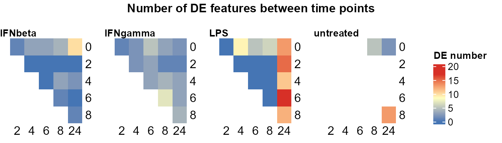
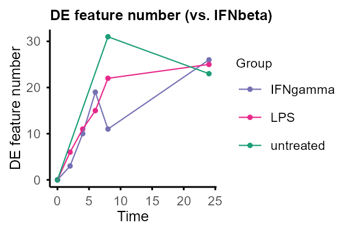
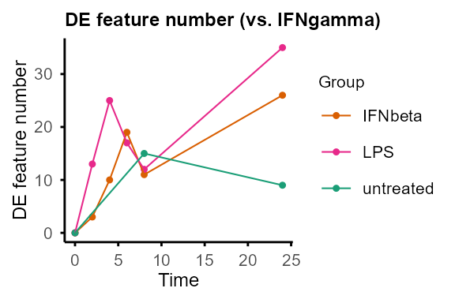
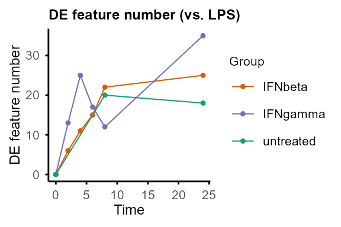
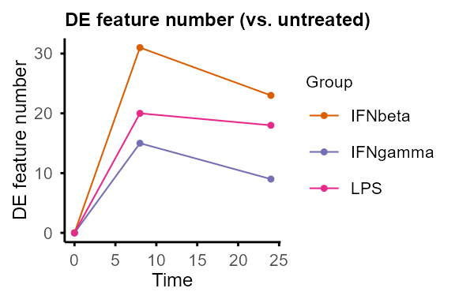
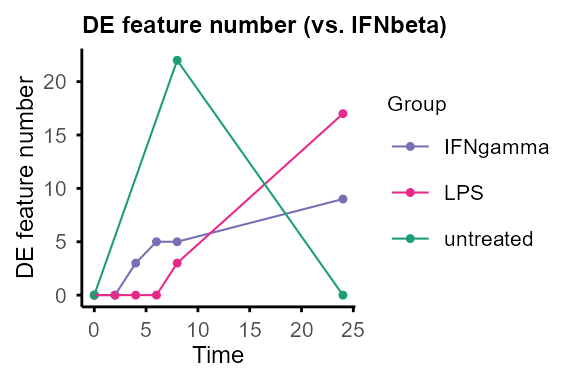
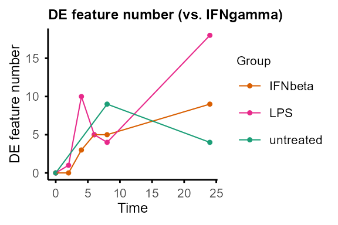
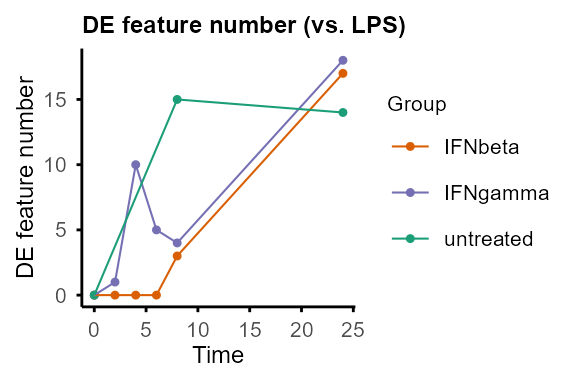
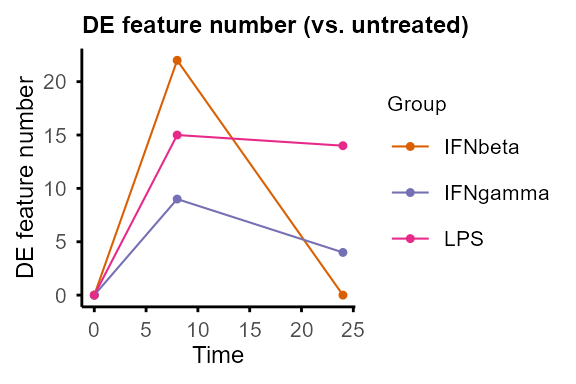
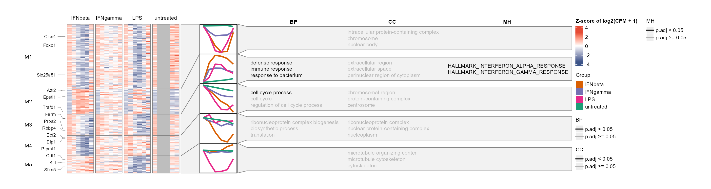

TiDEomics Tutorial
Tianen He
University of Oxfordtianen.he@ndm.ox.ac.uk
1 July 2026
Source:vignettes/TiDEomics.Rmd
TiDEomics.RmdIntroduction
TiDEomics
(Time-course Differential Expression analysis of omics data) is an R
package for multi-group time-course omics analysis
built on SummarizedExperiment, especially for comparison of
more than two conditions across time.
TiDEomics provides:
An integrated workflow from data processing to functional interpretation, on different omics data types in feature x sample matrix format, with handling of missing values.
An approach to separate time-dominant, group-dominant, and group-specific temporal effects through the combination of pairwise differential expression, variance decomposition, and co-expression module analysis (WGCNA).
A filtering strategy based on residual variance after mixed-model variance decomposition, prioritising features with structured differential expression over unexplained variation. In comparison, traditional filtering by total variance or coefficient of variation is less appropriate when biological variation across groups and time course is expected.
Existing packages on time-course omics analysis are available,
typically designed for transcriptomics data. Some packages are limited
to two-group comparisons (e.g. splineTimeR) or expect raw
sequencing counts (e.g. ImpulseDE2, TCseq).
maSigPro supports multi-group time-course DE analysis via
polynomial regression, complementary to TiDEomics with
fewer assumptions about temporal trends. TiDEomics also
integrates QC, filtering and downstream functional enrichment within the
same workflow.
TiDEomics incorporates Trendy (Bacher et al. 2018) which operates on single
time series to estimate breakpoints per group per feature, and derived
variance decomposition from PALMO (Vasaikar et al. 2023) and introduced residual
variance as a filtering criterion.
This tutorial demonstrates a basic workflow, explains key parameters, and gives practical tips.
Key features covered:
Preparing input: Create a
SummarizedExperimentobject with the data matrix and sample annotation, with checks for correct formatting.Quality control: Visualise value distributions and missingness patterns.
Normalisation, grouping and merging replicates: Normalise each feature to the starting time point when focused on changes from baseline. Transform the data for analyses that require single groups or single time series.
Sample relationships visualisation (correlation matrix, PCA, UMAP): Explore global structure and major sources of variance, check for batch effects, and identify features driving PCs.
Pairwise differential expression (by time or group): Identify DE features between pairs of time points within each group, and between pairs of groups at each time point.
Classification by feature property (randomness and overall fold change): Classify features into different categories (e.g., non-random vs. random, differentially expressed vs. stable) based on properties including trend significance and maximum fold change.
Segmented regression with Trendy: Estimate breakpoints for each feature in each group and summarise dynamic patterns.
Variance decomposition modified from PALMO: Quantify relative contributions from
Time,Group, andResidual, distinguish time or group-dependent DE features and “noisy” features.Module identification with WGCNA: Identify co-expression modules with different temporal and group-specific patterns.
Functional enrichment (gene ontology, drugs, etc.): Interpret biological meaning of identified DE features and modules.
Installation
if (!requireNamespace("BiocManager", quietly = TRUE)) {
install.packages("BiocManager")
}
BiocManager::install("TiDEomics")
library(TiDEomics)
#> Warning: multiple methods tables found for 'transform'
#> Warning: replacing previous import 'BiocGenerics::transform' by
#> 'S4Vectors::transform' when loading 'SummarizedExperiment'
#> Warning: replacing previous import 'BiocGenerics::transform' by
#> 'S4Vectors::transform' when loading 'IRanges'
#> Warning: multiple methods tables found for 'transform'
#> Warning: replacing previous import 'BiocGenerics::transform' by
#> 'S4Vectors::transform' when loading 'Seqinfo'
#> Warning: replacing previous import 'BiocGenerics::transform' by
#> 'S4Vectors::transform' when loading 'GenomicRanges'
#> Warning: replacing previous import 'BiocGenerics::transform' by
#> 'S4Vectors::transform' when loading 'S4Arrays'
#> Warning: replacing previous import 'BiocGenerics::transform' by
#> 'S4Vectors::transform' when loading 'DelayedArray'
#> Warning: replacing previous import 'BiocGenerics::transform' by
#> 'S4Vectors::transform' when loading 'SparseArray'
#> Warning: replacing previous import 'BiocGenerics::transform' by
#> 'S4Vectors::transform' when loading 'XVector'
library(SummarizedExperiment)
#> Loading required package: MatrixGenerics
#> Loading required package: matrixStats
#>
#> Attaching package: 'MatrixGenerics'
#> The following objects are masked from 'package:matrixStats':
#>
#> colAlls, colAnyNAs, colAnys, colAvgsPerRowSet, colCollapse,
#> colCounts, colCummaxs, colCummins, colCumprods, colCumsums,
#> colDiffs, colIQRDiffs, colIQRs, colLogSumExps, colMadDiffs,
#> colMads, colMaxs, colMeans2, colMedians, colMins, colOrderStats,
#> colProds, colQuantiles, colRanges, colRanks, colSdDiffs, colSds,
#> colSums2, colTabulates, colVarDiffs, colVars, colWeightedMads,
#> colWeightedMeans, colWeightedMedians, colWeightedSds,
#> colWeightedVars, rowAlls, rowAnyNAs, rowAnys, rowAvgsPerColSet,
#> rowCollapse, rowCounts, rowCummaxs, rowCummins, rowCumprods,
#> rowCumsums, rowDiffs, rowIQRDiffs, rowIQRs, rowLogSumExps,
#> rowMadDiffs, rowMads, rowMaxs, rowMeans2, rowMedians, rowMins,
#> rowOrderStats, rowProds, rowQuantiles, rowRanges, rowRanks,
#> rowSdDiffs, rowSds, rowSums2, rowTabulates, rowVarDiffs, rowVars,
#> rowWeightedMads, rowWeightedMeans, rowWeightedMedians,
#> rowWeightedSds, rowWeightedVars
#> Loading required package: GenomicRanges
#> Loading required package: stats4
#> Loading required package: BiocGenerics
#> Loading required package: generics
#> Warning: package 'generics' was built under R version 4.6.1
#>
#> Attaching package: 'generics'
#> The following objects are masked from 'package:base':
#>
#> as.difftime, as.factor, as.ordered, intersect, is.element, setdiff,
#> setequal, union
#>
#> Attaching package: 'BiocGenerics'
#> The following objects are masked from 'package:stats':
#>
#> IQR, mad, sd, var, xtabs
#> The following object is masked from 'package:utils':
#>
#> data
#> The following objects are masked from 'package:base':
#>
#> anyDuplicated, aperm, append, as.data.frame, basename, cbind,
#> colnames, dirname, do.call, duplicated, eval, evalq, Filter, Find,
#> get, grep, grepl, is.unsorted, lapply, Map, mapply, match, mget,
#> order, paste, pmax, pmax.int, pmin, pmin.int, Position, rank,
#> rbind, Reduce, rownames, sapply, saveRDS, scale, sequence, table,
#> tapply, transform, unique, unsplit, which.max, which.min
#> Loading required package: S4Vectors
#>
#> Attaching package: 'S4Vectors'
#> The following object is masked from 'package:utils':
#>
#> findMatches
#> The following objects are masked from 'package:base':
#>
#> expand.grid, I, unname
#> Loading required package: IRanges
#>
#> Attaching package: 'IRanges'
#> The following object is masked from 'package:grDevices':
#>
#> windows
#> Loading required package: Seqinfo
#> Loading required package: Biobase
#> Welcome to Bioconductor
#>
#> Vignettes contain introductory material; view with
#> 'browseVignettes()'. To cite Bioconductor, see
#> 'citation("Biobase")', and for packages 'citation("pkgname")'.
#>
#> Attaching package: 'Biobase'
#> The following object is masked from 'package:MatrixGenerics':
#>
#> rowMedians
#> The following objects are masked from 'package:matrixStats':
#>
#> anyMissing, rowMedians
library(org.Mm.eg.db)
#> Loading required package: AnnotationDbi
#> Warning: replacing previous import 'BiocGenerics::transform' by
#> 'S4Vectors::transform' when loading 'AnnotationDbi'
#> Warning: replacing previous import 'utils::data' by 'BiocGenerics::data' when
#> loading 'Biostrings'
#> Warning: replacing previous import 'BiocGenerics::transform' by
#> 'S4Vectors::transform' when loading 'Biostrings'
#> Example input
TiDEomics expects:
-
data: log2-transformed data.frame- rows: features (e.g. genes, proteins)
- columns: First column should be feature identifiers. Other columns are numeric measurements of features for each sample.
- Missing values (NA) are allowed.
-
sample_ann: data.frame with columns:-
Sample: sample names, match column names ofdata -
Group: experimental group -
Time: numeric time point -
Replicate: replicate ID (optional, auto-generated if absent) -
Batch: batch ID (optional) -
Subject: biological subject ID for repeated-measures designs (optional, set viasubject_col)
-
Example: subset of GSE263759 data set published in Traxler et al. (2025).
- Ensembl IDs were mapped to symbols, genes with all zero counts were excluded.
- Use time 0 untreated samples for other groups’ time 0.
- Sample 500 random genes.
- Normalised to
log2(CPM + 1)
Preprocessing for different data types
TiDEomics expects log-transformed, normalised data as input. The core
workflow is compatible with any quantitative omics data in a feature x
sample matrix. Enrichment analysis (enrichGO_list,
enrichGO_rank, enrichR_list,
enrich_msigdb) requires gene identifiers and is not
applicable to non-gene features (e.g., metabolites, lipids).
Batch correction should be applied before input if batch effects are present.
For the most common scenarios in transcriptomics and proteomics:
RNA-seq data should be normalised for sequencing depth and composition bias before TiDEomics, e.g. with TMM. The tutorial uses
log2(CPM + 1)for simplicity. For pairwise differential expression,trend = TRUEcan be used to account for the mean-variance relationship. See below section on pairwise differential expression for details.MS-based proteomics data processing software may include normalisation when producing protein x sample matrix. Depending on software and settings, manual normalisation and log transformation may be required, e.g. median normalisation. Missing values are accepted in most TiDEomics functions, and a basic imputation function
impute_groups()is provided.
Workflow
We present the workflow as below sections, explaining the usage and parameters.
Data preparation
data_obj <- create_input(
data = tutorial_data,
sample_ann = tutorial_sample_info)
#> No Subject column specified. Samples treated as independent. For repeated-measures designs, set subject_col to the column identifying biological subjects.
#> Converting 'Group' column to factor. Default order is alphabetical.
#> Converting 'Replicate' column to factor. Default order is numerical.
#> Converting 'Batch' column to factor. Default order is numerical.
data_obj#> class: SummarizedExperiment
#> dim: 500 40
#> metadata(0):
#> assays(1): orig
#> rownames(500): Scpep1 Dbt ... Rps2-ps8 Gm30082
#> rowData names(0):
#> colnames(40): RNA_IFNbeta_0h_R1_1 RNA_IFNbeta_0h_R2_1 ...
#> RNA_untreated_24h_R1_2 RNA_untreated_24h_R2_2
#> colData names(5): Sample Group Time Replicate BatchThe SummarizedExperiment stores data in named
assays: "orig" (assay 1) for the original
input and "norm" (assay 2) for time-0-normalised values
(added by normalise_to_start()). Downstream functions
accept either the name or the index.
assays(data_obj)[["orig"]] |> as.data.frame() |> utils::head()#> RNA_IFNbeta_0h_R1_1 RNA_IFNbeta_0h_R2_1 RNA_IFNbeta_2h_R1_1
#> Scpep1 14.348367 14.574630 14.182225
#> Dbt 9.808077 9.532127 9.253170
#> Tmigd3 0.000000 4.934295 8.669389
#> Clcn4 11.690389 11.769377 11.296892
#> Serpinf1 0.000000 5.910507 4.054922
#> Sema6b 9.705103 9.794837 9.055578
#> RNA_IFNbeta_2h_R2_1 RNA_IFNbeta_4h_R1_1 RNA_IFNbeta_4h_R2_1
#> Scpep1 14.545857 13.781762 14.170209
#> Dbt 9.726259 9.203447 9.301467
#> Tmigd3 9.142147 7.402197 8.434599
#> Clcn4 11.320065 10.577808 11.026495
#> Serpinf1 0.000000 3.908127 0.000000
#> Sema6b 9.142147 7.517018 7.614681
#> RNA_IFNbeta_6h_R1_1 RNA_IFNbeta_6h_R2_1 RNA_IFNbeta_8h_R1_2
#> Scpep1 14.006141 14.003146 14.224451
#> Dbt 8.617414 8.170372 7.195334
#> Tmigd3 7.492487 8.905333 7.694936
#> Clcn4 10.085694 10.403460 9.791947
#> Serpinf1 0.000000 3.874887 3.714783
#> Sema6b 7.194774 7.866695 7.070698
#> RNA_IFNbeta_8h_R2_2 RNA_IFNbeta_24h_R1_2 RNA_IFNbeta_24h_R2_2
#> Scpep1 13.956227 14.973840 14.772619
#> Dbt 8.613311 9.078798 9.041766
#> Tmigd3 6.433764 5.603607 0.000000
#> Clcn4 10.378891 11.179112 11.547849
#> Serpinf1 0.000000 0.000000 0.000000
#> Sema6b 6.943322 7.994333 7.190952
#> RNA_IFNgamma_0h_R1_1 RNA_IFNgamma_0h_R2_1 RNA_IFNgamma_2h_R1_1
#> Scpep1 14.348367 14.574630 14.319784
#> Dbt 9.808077 9.532127 9.942459
#> Tmigd3 0.000000 4.934295 9.108667
#> Clcn4 11.690389 11.769377 11.451702
#> Serpinf1 0.000000 5.910507 3.990353
#> Sema6b 9.705103 9.794837 9.985484
#> RNA_IFNgamma_2h_R2_1 RNA_IFNgamma_4h_R1_1 RNA_IFNgamma_4h_R2_1
#> Scpep1 14.708510 14.449378 14.983128
#> Dbt 9.741476 9.349289 9.283574
#> Tmigd3 9.989137 7.036182 7.552000
#> Clcn4 11.468219 11.113262 11.272795
#> Serpinf1 5.194766 0.000000 0.000000
#> Sema6b 10.156092 8.488601 9.049517
#> RNA_IFNgamma_6h_R1_1 RNA_IFNgamma_6h_R2_1 RNA_IFNgamma_8h_R1_2
#> Scpep1 14.426760 14.805496 14.940393
#> Dbt 9.453073 9.408082 9.696059
#> Tmigd3 5.068399 6.579816 4.838746
#> Clcn4 11.091499 11.274895 11.036043
#> Serpinf1 0.000000 0.000000 3.888301
#> Sema6b 7.617078 8.790309 8.834985
#> RNA_IFNgamma_8h_R2_2 RNA_IFNgamma_24h_R1_2 RNA_IFNgamma_24h_R2_2
#> Scpep1 14.512159 14.769962 14.688943
#> Dbt 9.748959 10.044613 9.980503
#> Tmigd3 6.686073 6.042928 5.137996
#> Clcn4 11.274612 11.735548 11.718911
#> Serpinf1 3.960425 0.000000 0.000000
#> Sema6b 8.261664 7.834568 8.800111
#> RNA_LPS_0h_R1_1 RNA_LPS_0h_R2_1 RNA_LPS_2h_R1_1 RNA_LPS_2h_R2_1
#> Scpep1 14.348367 14.574630 14.187414 14.552229
#> Dbt 9.808077 9.532127 9.247198 9.225632
#> Tmigd3 0.000000 4.934295 0.000000 0.000000
#> Clcn4 11.690389 11.769377 11.222706 11.275642
#> Serpinf1 0.000000 5.910507 0.000000 0.000000
#> Sema6b 9.705103 9.794837 7.423177 8.956039
#> RNA_LPS_4h_R1_1 RNA_LPS_4h_R2_1 RNA_LPS_6h_R1_1 RNA_LPS_6h_R2_1
#> Scpep1 13.858015 14.273547 13.754104 14.049972
#> Dbt 9.476616 9.255937 9.216234 9.666725
#> Tmigd3 5.974161 6.364303 7.124646 7.950900
#> Clcn4 10.506608 10.762553 10.238848 10.572787
#> Serpinf1 4.041417 0.000000 0.000000 0.000000
#> Sema6b 4.996930 7.094247 5.915972 6.679097
#> RNA_LPS_8h_R1_2 RNA_LPS_8h_R2_2 RNA_LPS_24h_R2_2 RNA_untreated_0h_R1_1
#> Scpep1 14.011343 13.585415 14.048681 14.348367
#> Dbt 9.764987 10.061661 9.515293 9.808077
#> Tmigd3 7.013723 6.615666 7.978484 0.000000
#> Clcn4 10.740325 10.976635 12.083509 11.690389
#> Serpinf1 3.930458 0.000000 0.000000 0.000000
#> Sema6b 8.964764 7.608292 7.978484 9.705103
#> RNA_untreated_0h_R2_1 RNA_untreated_8h_R2_2 RNA_untreated_24h_R1_2
#> Scpep1 14.574630 13.817449 14.077291
#> Dbt 9.532127 9.847373 9.868152
#> Tmigd3 4.934295 0.000000 0.000000
#> Clcn4 11.769377 11.560529 11.988953
#> Serpinf1 5.910507 0.000000 5.805180
#> Sema6b 9.794837 9.307516 8.590248
#> RNA_untreated_24h_R2_2
#> Scpep1 13.778019
#> Dbt 10.699739
#> Tmigd3 5.802129
#> Clcn4 12.310301
#> Serpinf1 5.230037
#> Sema6b 9.100597
colData(data_obj) # sample annotation#> DataFrame with 40 rows and 5 columns
#> Sample Group Time Replicate
#> <character> <factor> <numeric> <factor>
#> RNA_IFNbeta_0h_R1_1 RNA_IFNbeta_0h_R1_1 IFNbeta 0 1
#> RNA_IFNbeta_0h_R2_1 RNA_IFNbeta_0h_R2_1 IFNbeta 0 2
#> RNA_IFNbeta_2h_R1_1 RNA_IFNbeta_2h_R1_1 IFNbeta 2 1
#> RNA_IFNbeta_2h_R2_1 RNA_IFNbeta_2h_R2_1 IFNbeta 2 2
#> RNA_IFNbeta_4h_R1_1 RNA_IFNbeta_4h_R1_1 IFNbeta 4 1
#> ... ... ... ... ...
#> RNA_untreated_0h_R1_1 RNA_untreated_0h_R1_1 untreated 0 1
#> RNA_untreated_0h_R2_1 RNA_untreated_0h_R2_1 untreated 0 2
#> RNA_untreated_8h_R2_2 RNA_untreated_8h_R2_2 untreated 8 2
#> RNA_untreated_24h_R1_2 RNA_untreated_24h_R1_2 untreated 24 1
#> RNA_untreated_24h_R2_2 RNA_untreated_24h_R2_2 untreated 24 2
#> Batch
#> <factor>
#> RNA_IFNbeta_0h_R1_1 1
#> RNA_IFNbeta_0h_R2_1 1
#> RNA_IFNbeta_2h_R1_1 1
#> RNA_IFNbeta_2h_R2_1 1
#> RNA_IFNbeta_4h_R1_1 1
#> ... ...
#> RNA_untreated_0h_R1_1 1
#> RNA_untreated_0h_R2_1 1
#> RNA_untreated_8h_R2_2 2
#> RNA_untreated_24h_R1_2 2
#> RNA_untreated_24h_R2_2 2Optional: custom color palette
By default, TiDEomics generates a default color palette
(scales::pal_hue()) based on the number of groups. A custom
palette for each group can be set with
set_custom_palette(), which will be used in all subsequent
plotting functions where applicable.
custom_palette <- c(
"untreated" = "#1b9e77", "IFNbeta" = "#d95f02",
"IFNgamma" = "#7570b3", "LPS" = "#e7298a"
)
set_custom_palette(custom_palette)
#> Custom palette has been set successfully for groups untreated, IFNbeta, IFNgamma, LPS.Quality control
plot_distribution(data_obj, facet_by = "Group")
#> Picking joint bandwidth of 1.3
#> Picking joint bandwidth of 1.31
#> Picking joint bandwidth of 1.3
#> Picking joint bandwidth of 1.32
If distributions differ significantly, consider global normalisation (e.g., quantile, median) before using TiDEomics.
For data with missing values (e.g., proteomics),
plot_ID() and plot_missing() can be used to
check missingness patterns.
Normalisation to starting time point
normalise_to_start() subtracts the baseline value from
each feature at starting time point (referred to as time 0) or the first
available time point if the feature is missing at time 0.
Two modes are available for defining the baseline:
by_subject = FALSE(default): group-level baseline, mean of all samples at starting time point in the group. This is used when no subject-level information is available or when between-subject baseline differences are of interest.by_subject = TRUE: subject-level baseline, mean of all samples at starting time point for each subject. This is used when subject-level information is available and the focus is on subject-specific changes from baseline.
data_obj <- normalise_to_start(data_obj)
#> Normalising to group baseline at each feature's first non-NA time point.Both original and time-0 normalised data are stored in the
SummarizedExperiment object and downstream functions allow
the user to specify which to use for each analysis
(assay = 1 or 'orig' for original,
assay = 2 or 'norm' for time-0 normalised).
Use original data when absolute abundance differences across groups are of interest (e.g., constitutively different baseline levels). Use time-0 normalised data when relative changes from baseline are of interest.
Splitting groups and merging replicates
Use split_groups() to obtain group-specific
SummarizedExperiment objects and
merge_replicates() to average replicates for analyses /
visualisation that require single time series for features, including
calc_feature_property(), run_Trendy(),
plot_modules_v() and plot_modules_h().
data_obj_list <- split_groups(data_obj)
data_obj_merged_list <- merge_replicates(data_obj_list)
data_obj_merged <- merge_groups(data_obj_merged_list)Sample relationships (correlation, PCA, UMAP)
Correlation matrix can be plotted with plot_cor_matrix()
to check sample relationships and potential batch effects.
plot_cor_matrix(data_obj,
method = "spearman",
label_rep = TRUE, label_batch = TRUE,
cellwidth = 2, cellheight = 2
)
High within-replicate correlation and clustering by
Group or Time increase confidence in data
quality and downstream analysis. If batch effects are present, consider
batch correction before using TiDEomics.
There are multiple functions for PCA and UMAP:
Use
plot_pca()to visualise sample relationships in 2D. Output loadings can be used to identify features driving the principal components.Use
plot_pca_3D()to visualise sample relationships in 3D.Use
PCAtools::eigencorplot()to correlate PCs with Group and Time.Use
plot_umap()for UMAP and setseedfor reproducibility.
Features with missing values (NA) are automatically excluded from PCA
and UMAP. Consider imputation (e.g., group-wise minimum imputation with
split_groups(), impute_groups() and
merge_groups()) to include features with missing values in
PCA and UMAP.
PC <- plot_pca(data_obj,
# pc1 = 1, pc2 = 2, # default to plot PC1 and PC2
plot_screeplot = TRUE,
plot_loadings = FALSE,
plot_morepc = TRUE,
circle = FALSE,
morepc = 1:5
)
#> Warning: Using `size` aesthetic for lines was deprecated in ggplot2 3.4.0.
#> ℹ Please use `linewidth` instead.
#> ℹ The deprecated feature was likely used in the PCAtools package.
#> Please report the issue to the authors.
#> This warning is displayed once per session.
#> Call `lifecycle::last_lifecycle_warnings()` to see where this warning was
#> generated.
#> Warning: Using size for a discrete variable is not advised.
#> Scale for colour is already present.
#> Adding another scale for colour, which will replace the existing scale.
#> Scale for colour is already present.
#> Adding another scale for colour, which will replace the existing scale.
#> Scale for colour is already present.
#> Adding another scale for colour, which will replace the existing scale.
#> Scale for colour is already present.
#> Adding another scale for colour, which will replace the existing scale.
#> Scale for colour is already present.
#> Adding another scale for colour, which will replace the existing scale.
#> Scale for colour is already present.
#> Adding another scale for colour, which will replace the existing scale.
#> Scale for colour is already present.
#> Adding another scale for colour, which will replace the existing scale.
#> Scale for colour is already present.
#> Adding another scale for colour, which will replace the existing scale.
#> Scale for colour is already present.
#> Adding another scale for colour, which will replace the existing scale.
#> Scale for colour is already present.
#> Adding another scale for colour, which will replace the existing scale.
PC$p_list#> $p3
#>
#> $p1
#>
#> $p5
plot_pca_3D(PC$pca, pcs = 1:3)
#> Warning: `line.width` does not currently support multiple values.
#> Warning: `line.width` does not currently support multiple values.
#> Warning: `line.width` does not currently support multiple values.
#> Warning: `line.width` does not currently support multiple values.Note: the 3D plot may not display properly in some html, but should work in an interactive R session.
PCAtools::eigencorplot(PC$pca,
metavars = c("Group", "Time"),
components = paste0("PC", 1:5),
col = colorRampPalette(c("#3C5488FF", "white", "#E64B35FF"))(100),
colCorval = "black"
)
#> Warning in PCAtools::eigencorplot(PC$pca, metavars = c("Group", "Time"), :
#> Group is not numeric - please check the source data as non-numeric variables
#> will be coerced to numeric
umap <- plot_umap(data_obj, seed = 1234)
#> Using n_neighbors = 8
#> Warning: Using size for a discrete variable is not advised.
umap$p_list#> $p3
#>
#> $p1
PCA and UMAP can also be performed separately on each group to explore within-group structure and dynamics.
By default, when plotting PCA by group, circles and arrows are added
to show the trajectory of samples along time course. Set
circle = FALSE or arrow = FALSE to remove
circles and arrows.
plot_pca_by_group(data_obj, circle = TRUE, arrow = TRUE, legend_pos = "top")
#> Warning: Using size for a discrete variable is not advised.
#> Using size for a discrete variable is not advised.
#> Using size for a discrete variable is not advised.
#> Using size for a discrete variable is not advised.
# also accepts a list: plot_pca_by_group(data_obj_list)
plot_umap_by_group(data_obj, seed = 1234, legend_pos = "top")
#> Using n_neighbors = 5
#> Warning: Using size for a discrete variable is not advised.
#> Using n_neighbors = 5
#> Warning: Using size for a discrete variable is not advised.
#> Using n_neighbors = 5
#> Warning: Using size for a discrete variable is not advised.
#> Using n_neighbors = 4
#> Warning: Using size for a discrete variable is not advised.
# also accepts a list: plot_umap_by_group(data_obj_list)Pairwise differential expression
The two DE functions for pairwise comparison between time points and groups are built based on the limma package (Ritchie et al. 2015).
Compare pairs of time points within each group.
Output: Nested lists of DE statistics tables, including all features or only significant features.
Use
plot_DE_between_time()to summarise number of DE features per pair of time points per group.When a Subject column is provided via
subject_colincreate_input(),DE_between_time()automatically uses a paired design vialimma::duplicateCorrelation(block = Subject).
Compare pairs of groups at each time point.
Output: Nested lists of DE statistics tables, including all features or only significant features.
Use
plot_DE_between_group()to summarise number of DE features per pair of groups with line plots.
Common parameters for both functions:
assay: index of assay to use (1 = original, 2 = time0-normalised if available)filter: minimal number of non-NA replicates for the feature to be included in DE testing (e.g.,filter = 1means requiring features to have at least 1 non-NA value at both time points in the specific group, or in both groups at the specific time point).trend: passed tolimma::eBayes(). Set toTRUEfor RNA-seq count-derived data to model the mean-variance trend.FALSE(default) is usually appropriate for other types of data, where the trend is typically weak. The trend can be visualised withlimma::plotSA()with elements of$fit_listof both functions’ output.Default thresholds for DE are
p.adj < 0.05and|log2FC| > 1.plot_DE_between_time()andplot_DE_between_group()allow re-filtering DE by setting new thresholds.
Please note that the example data only has two replicates per time point. More replicates are recommended for robust pairwise DE analysis.
DE_between_time():
DE_between_time_out <- DE_between_time(data_obj, assay = 1,
filter = 1, trend = FALSE)
#> Comparing group IFNbeta time 2 to 0: keeping 500 of 500 features (100.0%)
#> Comparing group IFNbeta time 4 to 0: keeping 500 of 500 features (100.0%)
#> Comparing group IFNbeta time 6 to 0: keeping 500 of 500 features (100.0%)
#> Comparing group IFNbeta time 8 to 0: keeping 500 of 500 features (100.0%)
#> Comparing group IFNbeta time 24 to 0: keeping 500 of 500 features (100.0%)
#> Comparing group IFNbeta time 4 to 2: keeping 500 of 500 features (100.0%)
#> Comparing group IFNbeta time 6 to 2: keeping 500 of 500 features (100.0%)
#> Comparing group IFNbeta time 8 to 2: keeping 500 of 500 features (100.0%)
#> Comparing group IFNbeta time 24 to 2: keeping 500 of 500 features (100.0%)
#> Comparing group IFNbeta time 6 to 4: keeping 500 of 500 features (100.0%)
#> Comparing group IFNbeta time 8 to 4: keeping 500 of 500 features (100.0%)
#> Comparing group IFNbeta time 24 to 4: keeping 500 of 500 features (100.0%)
#> Comparing group IFNbeta time 8 to 6: keeping 500 of 500 features (100.0%)
#> Comparing group IFNbeta time 24 to 6: keeping 500 of 500 features (100.0%)
#> Comparing group IFNbeta time 24 to 8: keeping 500 of 500 features (100.0%)
#> Comparing group IFNgamma time 2 to 0: keeping 500 of 500 features (100.0%)
#> Comparing group IFNgamma time 4 to 0: keeping 500 of 500 features (100.0%)
#> Comparing group IFNgamma time 6 to 0: keeping 500 of 500 features (100.0%)
#> Comparing group IFNgamma time 8 to 0: keeping 500 of 500 features (100.0%)
#> Comparing group IFNgamma time 24 to 0: keeping 500 of 500 features (100.0%)
#> Comparing group IFNgamma time 4 to 2: keeping 500 of 500 features (100.0%)
#> Comparing group IFNgamma time 6 to 2: keeping 500 of 500 features (100.0%)
#> Comparing group IFNgamma time 8 to 2: keeping 500 of 500 features (100.0%)
#> Comparing group IFNgamma time 24 to 2: keeping 500 of 500 features (100.0%)
#> Comparing group IFNgamma time 6 to 4: keeping 500 of 500 features (100.0%)
#> Comparing group IFNgamma time 8 to 4: keeping 500 of 500 features (100.0%)
#> Comparing group IFNgamma time 24 to 4: keeping 500 of 500 features (100.0%)
#> Comparing group IFNgamma time 8 to 6: keeping 500 of 500 features (100.0%)
#> Comparing group IFNgamma time 24 to 6: keeping 500 of 500 features (100.0%)
#> Comparing group IFNgamma time 24 to 8: keeping 500 of 500 features (100.0%)
#> Comparing group LPS time 2 to 0: keeping 500 of 500 features (100.0%)
#> Comparing group LPS time 4 to 0: keeping 500 of 500 features (100.0%)
#> Comparing group LPS time 6 to 0: keeping 500 of 500 features (100.0%)
#> Comparing group LPS time 8 to 0: keeping 500 of 500 features (100.0%)
#> Comparing group LPS time 24 to 0: keeping 500 of 500 features (100.0%)
#> Comparing group LPS time 4 to 2: keeping 500 of 500 features (100.0%)
#> Comparing group LPS time 6 to 2: keeping 500 of 500 features (100.0%)
#> Comparing group LPS time 8 to 2: keeping 500 of 500 features (100.0%)
#> Comparing group LPS time 24 to 2: keeping 500 of 500 features (100.0%)
#> Comparing group LPS time 6 to 4: keeping 500 of 500 features (100.0%)
#> Comparing group LPS time 8 to 4: keeping 500 of 500 features (100.0%)
#> Comparing group LPS time 24 to 4: keeping 500 of 500 features (100.0%)
#> Comparing group LPS time 8 to 6: keeping 500 of 500 features (100.0%)
#> Comparing group LPS time 24 to 6: keeping 500 of 500 features (100.0%)
#> Comparing group LPS time 24 to 8: keeping 500 of 500 features (100.0%)
#> Comparing group untreated time 8 to 0: keeping 500 of 500 features (100.0%)
#> Comparing group untreated time 24 to 0: keeping 500 of 500 features (100.0%)
#> Comparing group untreated time 24 to 8: keeping 500 of 500 features (100.0%)
DE_between_time_out$all_list$IFNbeta$`t2-t0` |> utils::head()#> Feature Comparison Group Cond1 Cond2 RNA_IFNbeta_0h_R1_1
#> 1 0610005C13Rik t2-t0 IFNbeta 0 2 0.000000
#> 2 1500015L24Rik t2-t0 IFNbeta 0 2 0.000000
#> 3 1700010I14Rik t2-t0 IFNbeta 0 2 7.656096
#> 4 1700018A04Rik t2-t0 IFNbeta 0 2 0.000000
#> 5 1700029J03Rik t2-t0 IFNbeta 0 2 0.000000
#> 6 1700066O22Rik t2-t0 IFNbeta 0 2 0.000000
#> RNA_IFNbeta_0h_R2_1 RNA_IFNbeta_2h_R1_1 RNA_IFNbeta_2h_R2_1 logFC
#> 1 0.000000 4.054922 0.000000 2.027461
#> 2 0.000000 0.000000 0.000000 0.000000
#> 3 7.217972 5.010856 6.958593 -1.452310
#> 4 0.000000 0.000000 0.000000 0.000000
#> 5 0.000000 0.000000 0.000000 0.000000
#> 6 0.000000 0.000000 0.000000 0.000000
#> P.Value adj.P.Val
#> 1 0.3758562 0.7863101
#> 2 1.0000000 1.0000000
#> 3 0.2359316 0.6980226
#> 4 1.0000000 1.0000000
#> 5 1.0000000 1.0000000
#> 6 1.0000000 1.0000000
DE_between_time_out$de_list$IFNbeta$`t2-t0` |> utils::head()#> Feature Comparison Group Cond1 Cond2 logFC adj.P.Val
#> 1 Angpt1 t2-t0 IFNbeta 0 2 3.763680 0.023617547
#> 2 Atg16l2 t2-t0 IFNbeta 0 2 -1.243503 0.024626716
#> 3 B4gat1 t2-t0 IFNbeta 0 2 -5.248955 0.038112839
#> 4 Ccrl2 t2-t0 IFNbeta 0 2 3.360865 0.018112467
#> 5 Cldn23 t2-t0 IFNbeta 0 2 4.137065 0.013642453
#> 6 Hes1 t2-t0 IFNbeta 0 2 -4.009877 0.005005953
# Filtered with thresholds in `DE_between_time()`
plot_DE_between_time(DE_between_time_out,
fontsize = 8, value = FALSE, nrow = 1, heatmap_width = 3
)
# Re-filtering with new thresholds
plot_DE_between_time(DE_between_time_out,
fontsize = 8, value = FALSE, nrow = 1, heatmap_width = 3,
adjP_thres = 0.01, logFC_thres = 1
)
#> Re-filtering DE features with adjP_thres = 0.01 and logFC_thres = 1.
DE_between_group():
DE_between_group_out <- DE_between_group(data_obj, assay = 2,
filter = 1, trend = TRUE)
#> Comparing group IFNgamma to IFNbeta at Time 0: keeping 500 of 500 features (100.0%)
#> Warning: Zero sample variances detected, have been offset away from zero
#> Comparing group IFNgamma to IFNbeta at Time 2: keeping 500 of 500 features (100.0%)
#> Warning: Zero sample variances detected, have been offset away from zero
#> Comparing group IFNgamma to IFNbeta at Time 4: keeping 500 of 500 features (100.0%)
#> Warning: Zero sample variances detected, have been offset away from zero
#> Comparing group IFNgamma to IFNbeta at Time 6: keeping 500 of 500 features (100.0%)
#> Warning: Zero sample variances detected, have been offset away from zero
#> Comparing group IFNgamma to IFNbeta at Time 8: keeping 500 of 500 features (100.0%)
#> Warning: Zero sample variances detected, have been offset away from zero
#> Comparing group IFNgamma to IFNbeta at Time 24: keeping 500 of 500 features (100.0%)
#> Warning: Zero sample variances detected, have been offset away from zero
#> Comparing group LPS to IFNbeta at Time 0: keeping 500 of 500 features (100.0%)
#> Warning: Zero sample variances detected, have been offset away from zero
#> Comparing group LPS to IFNbeta at Time 2: keeping 500 of 500 features (100.0%)
#> Warning: Zero sample variances detected, have been offset away from zero
#> Comparing group LPS to IFNbeta at Time 4: keeping 500 of 500 features (100.0%)
#> Warning: Zero sample variances detected, have been offset away from zero
#> Comparing group LPS to IFNbeta at Time 6: keeping 500 of 500 features (100.0%)
#> Warning: Zero sample variances detected, have been offset away from zero
#> Comparing group LPS to IFNbeta at Time 8: keeping 500 of 500 features (100.0%)
#> Warning: Zero sample variances detected, have been offset away from zero
#> Comparing group LPS to IFNbeta at Time 24: keeping 500 of 500 features (100.0%)
#> Warning: Zero sample variances detected, have been offset away from zero
#> Comparing untreated vs IFNbeta: time points only in IFNbeta: 2, 4, 6; only in untreated: none
#> Comparing group untreated to IFNbeta at Time 0: keeping 500 of 500 features (100.0%)
#> Warning: Zero sample variances detected, have been offset away from zero
#> Comparing group untreated to IFNbeta at Time 8: keeping 500 of 500 features (100.0%)
#> Warning: Zero sample variances detected, have been offset away from zero
#> Comparing group untreated to IFNbeta at Time 24: keeping 500 of 500 features (100.0%)
#> Warning: Zero sample variances detected, have been offset away from zero
#> Comparing group IFNbeta to IFNgamma at Time 0: keeping 500 of 500 features (100.0%)
#> Warning: Zero sample variances detected, have been offset away from zero
#> Comparing group IFNbeta to IFNgamma at Time 2: keeping 500 of 500 features (100.0%)
#> Warning: Zero sample variances detected, have been offset away from zero
#> Comparing group IFNbeta to IFNgamma at Time 4: keeping 500 of 500 features (100.0%)
#> Warning: Zero sample variances detected, have been offset away from zero
#> Comparing group IFNbeta to IFNgamma at Time 6: keeping 500 of 500 features (100.0%)
#> Warning: Zero sample variances detected, have been offset away from zero
#> Comparing group IFNbeta to IFNgamma at Time 8: keeping 500 of 500 features (100.0%)
#> Warning: Zero sample variances detected, have been offset away from zero
#> Comparing group IFNbeta to IFNgamma at Time 24: keeping 500 of 500 features (100.0%)
#> Warning: Zero sample variances detected, have been offset away from zero
#> Comparing group LPS to IFNgamma at Time 0: keeping 500 of 500 features (100.0%)
#> Warning: Zero sample variances detected, have been offset away from zero
#> Comparing group LPS to IFNgamma at Time 2: keeping 500 of 500 features (100.0%)
#> Warning: Zero sample variances detected, have been offset away from zero
#> Comparing group LPS to IFNgamma at Time 4: keeping 500 of 500 features (100.0%)
#> Warning: Zero sample variances detected, have been offset away from zero
#> Comparing group LPS to IFNgamma at Time 6: keeping 500 of 500 features (100.0%)
#> Warning: Zero sample variances detected, have been offset away from zero
#> Comparing group LPS to IFNgamma at Time 8: keeping 500 of 500 features (100.0%)
#> Warning: Zero sample variances detected, have been offset away from zero
#> Comparing group LPS to IFNgamma at Time 24: keeping 500 of 500 features (100.0%)
#> Warning: Zero sample variances detected, have been offset away from zero
#> Comparing untreated vs IFNgamma: time points only in IFNgamma: 2, 4, 6; only in untreated: none
#> Comparing group untreated to IFNgamma at Time 0: keeping 500 of 500 features (100.0%)
#> Warning: Zero sample variances detected, have been offset away from zero
#> Comparing group untreated to IFNgamma at Time 8: keeping 500 of 500 features (100.0%)
#> Warning: Zero sample variances detected, have been offset away from zero
#> Comparing group untreated to IFNgamma at Time 24: keeping 500 of 500 features (100.0%)
#> Warning: Zero sample variances detected, have been offset away from zero
#> Comparing group IFNbeta to LPS at Time 0: keeping 500 of 500 features (100.0%)
#> Warning: Zero sample variances detected, have been offset away from zero
#> Comparing group IFNbeta to LPS at Time 2: keeping 500 of 500 features (100.0%)
#> Warning: Zero sample variances detected, have been offset away from zero
#> Comparing group IFNbeta to LPS at Time 4: keeping 500 of 500 features (100.0%)
#> Warning: Zero sample variances detected, have been offset away from zero
#> Comparing group IFNbeta to LPS at Time 6: keeping 500 of 500 features (100.0%)
#> Warning: Zero sample variances detected, have been offset away from zero
#> Comparing group IFNbeta to LPS at Time 8: keeping 500 of 500 features (100.0%)
#> Warning: Zero sample variances detected, have been offset away from zero
#> Comparing group IFNbeta to LPS at Time 24: keeping 500 of 500 features (100.0%)
#> Warning: Zero sample variances detected, have been offset away from zero
#> Comparing group IFNgamma to LPS at Time 0: keeping 500 of 500 features (100.0%)
#> Warning: Zero sample variances detected, have been offset away from zero
#> Comparing group IFNgamma to LPS at Time 2: keeping 500 of 500 features (100.0%)
#> Warning: Zero sample variances detected, have been offset away from zero
#> Comparing group IFNgamma to LPS at Time 4: keeping 500 of 500 features (100.0%)
#> Warning: Zero sample variances detected, have been offset away from zero
#> Comparing group IFNgamma to LPS at Time 6: keeping 500 of 500 features (100.0%)
#> Warning: Zero sample variances detected, have been offset away from zero
#> Comparing group IFNgamma to LPS at Time 8: keeping 500 of 500 features (100.0%)
#> Warning: Zero sample variances detected, have been offset away from zero
#> Comparing group IFNgamma to LPS at Time 24: keeping 500 of 500 features (100.0%)
#> Warning: Zero sample variances detected, have been offset away from zero
#> Comparing untreated vs LPS: time points only in LPS: 2, 4, 6; only in untreated: none
#> Comparing group untreated to LPS at Time 0: keeping 500 of 500 features (100.0%)
#> Warning: Zero sample variances detected, have been offset away from zero
#> Comparing group untreated to LPS at Time 8: keeping 500 of 500 features (100.0%)
#> Warning: Zero sample variances detected, have been offset away from zero
#> Comparing group untreated to LPS at Time 24: keeping 500 of 500 features (100.0%)
#> Warning: Zero sample variances detected, have been offset away from zero
#> Comparing IFNbeta vs untreated: time points only in untreated: none; only in IFNbeta: 2, 4, 6
#> Comparing group IFNbeta to untreated at Time 0: keeping 500 of 500 features (100.0%)
#> Warning: Zero sample variances detected, have been offset away from zero
#> Comparing group IFNbeta to untreated at Time 8: keeping 500 of 500 features (100.0%)
#> Warning: Zero sample variances detected, have been offset away from zero
#> Comparing group IFNbeta to untreated at Time 24: keeping 500 of 500 features (100.0%)
#> Warning: Zero sample variances detected, have been offset away from zero
#> Comparing IFNgamma vs untreated: time points only in untreated: none; only in IFNgamma: 2, 4, 6
#> Comparing group IFNgamma to untreated at Time 0: keeping 500 of 500 features (100.0%)
#> Warning: Zero sample variances detected, have been offset away from zero
#> Comparing group IFNgamma to untreated at Time 8: keeping 500 of 500 features (100.0%)
#> Warning: Zero sample variances detected, have been offset away from zero
#> Comparing group IFNgamma to untreated at Time 24: keeping 500 of 500 features (100.0%)
#> Warning: Zero sample variances detected, have been offset away from zero
#> Comparing LPS vs untreated: time points only in untreated: none; only in LPS: 2, 4, 6
#> Comparing group LPS to untreated at Time 0: keeping 500 of 500 features (100.0%)
#> Warning: Zero sample variances detected, have been offset away from zero
#> Comparing group LPS to untreated at Time 8: keeping 500 of 500 features (100.0%)
#> Warning: Zero sample variances detected, have been offset away from zero
#> Comparing group LPS to untreated at Time 24: keeping 500 of 500 features (100.0%)
#> Warning: Zero sample variances detected, have been offset away from zero
# Filtered with thresholds in `DE_between_group()`
plot_DE_between_group(DE_between_group_out)#> $IFNbeta
#>
#> $IFNgamma
#>
#> $LPS
#>
#> $untreated
# Re-filtering with new thresholds
plot_DE_between_group(DE_between_group_out, adjP_thres = 0.01, logFC_thres = 1)
#> Re-filtering DE features with adjP_thres = 0.01 and logFC_thres = 1.#> $IFNbeta
#>
#> $IFNgamma
#>
#> $LPS
#>
#> $untreated
DE_between_group_out$all_list$`IFNgamma-untreated`$`24` |> utils::head()#> Feature Comparison Time Cond1 Cond2
#> 1 0610005C13Rik IFNgamma-untreated 24 untreated IFNgamma
#> 2 1500015L24Rik IFNgamma-untreated 24 untreated IFNgamma
#> 3 1700010I14Rik IFNgamma-untreated 24 untreated IFNgamma
#> 4 1700018A04Rik IFNgamma-untreated 24 untreated IFNgamma
#> 5 1700029J03Rik IFNgamma-untreated 24 untreated IFNgamma
#> 6 1700066O22Rik IFNgamma-untreated 24 untreated IFNgamma
#> RNA_untreated_24h_R1_2 RNA_untreated_24h_R2_2 RNA_IFNgamma_24h_R1_2
#> 1 0.0000000 4.267973 0.0000000
#> 2 0.0000000 0.000000 0.0000000
#> 3 0.4357421 1.079914 0.5893888
#> 4 0.0000000 0.000000 0.0000000
#> 5 0.0000000 0.000000 0.0000000
#> 6 0.0000000 0.000000 0.0000000
#> RNA_IFNgamma_24h_R2_2 logFC P.Value adj.P.Val
#> 1 0.000000 -2.1339866 0.3764841 0.7715033
#> 2 0.000000 0.0000000 1.0000000 1.0000000
#> 3 -0.330099 -0.6281832 0.3324345 0.7715033
#> 4 0.000000 0.0000000 1.0000000 1.0000000
#> 5 0.000000 0.0000000 1.0000000 1.0000000
#> 6 0.000000 0.0000000 1.0000000 1.0000000
DE_between_group_out$de_list$`IFNgamma-untreated` |> utils::head()#> Feature Comparison Time Cond1 Cond2 logFC
#> 1 5930430L01Rik IFNgamma-untreated 8 untreated IFNgamma -5.463833
#> 2 Angpt1 IFNgamma-untreated 8 untreated IFNgamma 5.444523
#> 3 Gm12117 IFNgamma-untreated 8 untreated IFNgamma -3.942810
#> 4 Gm16793 IFNgamma-untreated 8 untreated IFNgamma -3.942810
#> 5 Gm18169 IFNgamma-untreated 8 untreated IFNgamma -3.942810
#> 6 Gm19829 IFNgamma-untreated 8 untreated IFNgamma -3.942810
#> adj.P.Val
#> 1 0.007225514
#> 2 0.043289683
#> 3 0.007225514
#> 4 0.007225514
#> 5 0.007225514
#> 6 0.015990010Output of DE_between_group()and
DE_between_time() can be plotted with
plot_volcano() to visualise DE features of selected
group(s) and time point(s).
plot_volcano(DE_between_group_out,
group1 = "untreated", group2 = "IFNgamma", time = 24,
logFC_thres = 0.5, adjP_thres = 0.05, label = TRUE)
Feature properties and classification
calc_feature_property() computes per-feature
properties:
P_trend: calculated withrandtests::bartels.rank.test(), testing for non-randomness of the time profile (i.e., whether the feature shows a significant overall trend across time points).Max_FC: maximum fold change across time points, calculated as the difference between the feature’s maximum and minimum abundance across time points. This captures the overall magnitude of change across the time course, regardless of the specific time points at which changes occur.Max_FC_time: the difference between time points with maximum and minimum abundance, providing information about the direction (up or down) and duration of changing.Exp_threshold: user-set value threshold for a feature to be considered expressed in a sample. This can be used to filter features based on expression level, e.g. settingthreshold = 0means that only values > 0 (log2(CPM + 1) > 0, i.e. CPM > 0 in the tutorial dataset) are considered expressed. The default is NULL, which means all non-NA values are considered expressed.T_total,T_expandExp_ratio: number of total time points, number of expressed time points with values >Exp_threshold(or non-NA values ifthreshold = NULL), and proportion of expressed time points (T_exp/T_total).Rho_time: Spearman correlation with time (positive = up, negative = down). Requires at least 3 expressed time points.Peak_ratio: proportion of time points that are local maxima (0 = monotonic, higher = more oscillatory).Log2_CV:log2(1 + SD / |mean|), coefficient of variation for relative temporal variability.AUC: area under the time-0-normalised curve from assay 2. Positive = net increase from baseline, negative = net decrease.NAif assay 2 is not available (runnormalise_to_start()first).
The property values can be used to classify features into different
categories (e.g., non-random vs. random, differentially expressed
vs. stable) for downstream analysis and interpretation. For example,
features with P_trend < 0.05 and
Max_FC >= 1 can be candidates for non-randomly
overall-changing DE features.
Note:
When replicates are present, the input should be the mean of replicates at each time point, output of
merge_replicates().The function is set to require at least 3 values > threshold to calculate
P_trend.
data_obj_merged_list <- calc_feature_property(data_obj_merged_list,
threshold = 0)
property_tb <- summarise_feature_property(data_obj_merged_list)
utils::head(property_tb)#> Feature Group Exp_threshold T_exp T_total P_trend Max_FC
#> 1 0610005C13Rik IFNbeta 0 2 6 NA 2.038398
#> 2 1500015L24Rik IFNbeta 0 0 6 NA NA
#> 3 1700010I14Rik IFNbeta 0 6 6 0.3111717 2.219149
#> 4 1700018A04Rik IFNbeta 0 1 6 NA 2.129232
#> 5 1700029J03Rik IFNbeta 0 0 6 NA NA
#> 6 1700066O22Rik IFNbeta 0 1 6 NA 1.937443
#> Max_FC_time Rho_time Peak_ratio Log2_CV AUC Exp_ratio
#> 1 24 NA NA NA 20.362109 0.3333333
#> 2 NA NA NA NA NA 0.0000000
#> 3 20 0.3142857 0.1666667 0.1725568 -13.328532 1.0000000
#> 4 24 NA NA NA 17.033857 0.1666667
#> 5 NA NA NA NA NA 0.0000000
#> 6 6 NA NA NA 3.874887 0.1666667Features expressed in only one group or a subset of groups can be
extracted with group_specific_features() based on the
output table of summarise_feature_property().
group_specific_features(property_tb, groups = c("untreated"),
genename = FALSE, GO = FALSE
)
#> Filtering criteria: >=50% values >0 in >=1 of groups: untreated#> $features
#> [1] "Gm12117" "Gm6689" "Mmp17"Segmented regression analysis
run_Trendy fits segmented linear models to the time
course for each feature to estimate breakpoints with Trendy package
(Bacher et al. 2018), see Trendy
for details.
Notes:
The function requires complete input (no NA). When data contains missing values (e.g. proteomics), use
impute_groups()to impute (default: group minimum; passfun = function(x) min(x) / 2for half-minimum,fun = medianfor median imputation, etc.), or restrict to features with complete data.If
featureis not specified, the function will run on all features filtered by expression / missing rate, which requires runningcalc_feature_property()beforeimpute_groups().Number of time points needed = [# segments] x [minimum number of samples in a segment]. For example, when # segments = 2 (maxK = 1) and minNumInSeg = 2, at least 4 time points are needed.
data_obj_merged_imp_list <- impute_groups(data_obj_merged_list)
#> Group IFNbeta: no missing values.
#> Group IFNgamma: no missing values.
#> Group LPS: no missing values.
#> Group untreated: no missing values.A subset of features is used for demonstration as
run_Trendy() can be time-consuming.
set.seed(1234)
random_features <- sample(rownames(data_obj_merged_imp_list[[1]]), 50)
example_res_list <- run_Trendy(data_obj_merged_imp_list,
feature = random_features,
minExp = 0.5,
maxK = 1,
minNumInSeg = 2, meanCut = 0, NCores = 2
)
#> Max number of breakpoints: 1
#> Min mean expression: 0
#> Min number of samples in each segment: 2
#> Running Trendy for group: IFNbeta
#> Using 50 specified features present in the data.
#> Warning in BiocParallel::MulticoreParam(workers = NCores): MulticoreParam() not
#> supported on Windows, use SnowParam()#> breakpoint estimate(s): 8.885903
#> breakpoint estimate(s): 8.000128
#> breakpoint estimate(s): 9.519174
#> breakpoint estimate(s): 8.000004
#> Running Trendy for group: IFNgamma
#> Using 50 specified features present in the data.
#> Warning in BiocParallel::MulticoreParam(workers = NCores): MulticoreParam() not
#> supported on Windows, use SnowParam()#> breakpoint estimate(s): 8.885903
#> breakpoint estimate(s): 9.519174
#> breakpoint estimate(s): 9.519174
#> breakpoint estimate(s): 9.519174
#> breakpoint estimate(s): 9.519174
#> Running Trendy for group: LPS
#> Using 50 specified features present in the data.
#> Warning in BiocParallel::MulticoreParam(workers = NCores): MulticoreParam() not
#> supported on Windows, use SnowParam()#> breakpoint estimate(s): 9.519174
#> breakpoint estimate(s): 8.885903
#> Running Trendy for group: untreated
#> Trendy analysis is not performed for group untreated: number of time points (3) less than required ((maxK + 1) * minNumInSeg = 4Use plot_segments()to plot the fitted segments and
breakpoints for selected features.
plot_segments(data_obj_merged_imp_list,
example_res_list,
feature = c("Slc25a51", "Aunip"), # example features
ylab = "Log2(CPM + 1)"
)
#> Plotting segmented regression for group: IFNbeta
#> Plotting segmented regression for group: IFNgamma
#> Plotting segmented regression for group: LPS
Plot the distribution of breakpoints across time points with
plot_breakpoints() in each group, and summarise the
temporal patterns (combination of trends of each segment) of features
with summarise_Trendy() and
extract_segment_trends().
plot_breakpoints(example_res_list)
#> Warning in (function (..., deparse.level = 1) : number of columns of result is
#> not a multiple of vector length (arg 13)
#> Warning in (function (..., deparse.level = 1) : number of columns of result is
#> not a multiple of vector length (arg 7)
#> Warning in (function (..., deparse.level = 1) : number of columns of result is
#> not a multiple of vector length (arg 8)
trendy_summary <- summarise_Trendy(example_res_list)
#> Warning in (function (..., deparse.level = 1) : number of columns of result is
#> not a multiple of vector length (arg 13)
#> Warning in (function (..., deparse.level = 1) : number of columns of result is
#> not a multiple of vector length (arg 7)
#> Warning in (function (..., deparse.level = 1) : number of columns of result is
#> not a multiple of vector length (arg 8)
trendy_summary |> utils::head()#> Group Feature Segment1.Slope Segment2.Slope Segment1.Trend
#> IFNbeta.Epsti1 IFNbeta Epsti1 0.40752 -0.033394 up
#> IFNbeta.Clcn4 IFNbeta Clcn4 -0.24811 0.079879 down
#> IFNbeta.Slc25a51 IFNbeta Slc25a51 -0.34738 0.048946 down
#> IFNbeta.Sigmar1 IFNbeta Sigmar1 -0.15605 0.026003 down
#> IFNbeta.Aunip IFNbeta Aunip -1.02150 -0.052100 down
#> IFNbeta.Egln1 IFNbeta Egln1 -0.38905 0.064994 down
#> Segment2.Trend Segment1.Pvalue Segment2.Pvalue Breakpoint
#> IFNbeta.Epsti1 down 0.01311011 0.03233940 4.563510
#> IFNbeta.Clcn4 up 0.01388632 0.01704393 7.070987
#> IFNbeta.Slc25a51 up 0.01740803 0.02502001 5.083190
#> IFNbeta.Sigmar1 up 0.02642960 0.06203984 7.989825
#> IFNbeta.Aunip down 0.04579129 0.07903206 2.793181
#> IFNbeta.Egln1 up 0.02785063 0.06514190 6.590795
#> AdjustedR2 X0.Trend X2.Trend X4.Trend X6.Trend X8.Trend
#> IFNbeta.Epsti1 0.9953935 1 1 1 -1 -1
#> IFNbeta.Clcn4 0.9945944 -1 -1 -1 -1 1
#> IFNbeta.Slc25a51 0.9933403 -1 -1 -1 1 1
#> IFNbeta.Sigmar1 0.9833696 -1 -1 -1 -1 1
#> IFNbeta.Aunip 0.9769662 -1 -1 -1 -1 -1
#> IFNbeta.Egln1 0.9737531 -1 -1 -1 -1 1
#> X24.Trend Pattern
#> IFNbeta.Epsti1 -1 up_down
#> IFNbeta.Clcn4 1 down_up
#> IFNbeta.Slc25a51 1 down_up
#> IFNbeta.Sigmar1 1 down_up
#> IFNbeta.Aunip -1 down_down
#> IFNbeta.Egln1 1 down_up
trendy_list <- extract_segment_trends(trendy_summary)
trendy_list$IFNbeta#> $up_down
#> [1] "Epsti1" "Mgst2"
#>
#> $down_up
#> [1] "Clcn4" "Slc25a51" "Sigmar1" "Egln1" "Cebpz" "Gga1" "P2ry6"
#> [8] "Trub1"
#>
#> $down_down
#> [1] "Aunip"
#>
#> $down_stable
#> [1] "Gm18169" "Lrp5" "Esco1"
#>
#> $up
#> [1] "Gata3un" "Gm9979" "Dmrta1" "1700018A04Rik"
#> [5] "Cldn23"
#>
#> $stable_stable
#> [1] "Luc7l2" "Stx16" "Sbno2" "Eif2s1" "Smad7"
#>
#> $stable_up
#> [1] "Memo1" "Slc35b3"
#>
#> $down
#> [1] "Cenpl" "H2ac7"Variance decomposition
Variance of each feature is decomposed by linear mixed models (LMM)
into contributions from Group, Subject (when
present), Time, Residual, and optionally
Group:Time (or Subject:Time) interaction,
which captures group-specific temporal patterns. This helps to identify
time-dependent features, group-dependent features, and “noisy” features
with high residual variance.
Interpreting the components:
High
Time: time-dependent features, dynamic along time course consistently across groups. Good candidates forrun_Trendy()or other time-focused analysis.High
Group: group-dependent features, stable along time but differentially expressed between groups. May be baseline biological markers.High
Subject(when present): features with baseline differences between individuals, biologically meaningful in patient studies.High
Residual: unexplained variation, consider excluding for downstream analysis.
The function decomp_variance() is inspired by
PALMO::lmeVariance()(Vasaikar et al.
2023). Group and Time are always included (auto-skipped if only 1
group or time point present). Subject is included when
present in colData. Set interaction = TRUE to add
Group:Time (or Subject:Time with Subject) as a
variance component capturing group-specific temporal patterns.
Sufficient replicates per combination are required for stable
estimates.
# filter genes for variance decomposition:
# at least 50% values > 0 in at least 2 groups
decomp_filter_genes <- group_specific_features(property_tb,
filter_ratio = 0.5,
group_pct = 2 / 4,
GO = FALSE, genename = FALSE
)$features
#> Filtering criteria: >=50% values >0 in >=2 of groups: IFNbeta, IFNgamma, LPS, untreated
var_decomp <- decomp_variance(data_obj,
features = decomp_filter_genes,
assay = 1, core = 2
)
#> LMM: exp ~ (1|Group) + (1|Time) | Output: Group, Time, Residual
plot_variance(var_decomp, rank = "Time", top_n = 20)
#> Features not specified. Plotting top 20 features ranked by Time.
plot_variance(var_decomp, rank = "Group", top_n = 20)
#> Features not specified. Plotting top 20 features ranked by Group.
WGCNA (co-expression modules)
Detailed tutorials of weighted gene correlation network analysis (WGCNA) (Langfelder and Horvath 2008, 2012) can be found online. The following is a brief demonstration of how to prepare input and run WGCNA with TiDEomics functions.
Filtering strategies:
Features with too many missing values will be automatically removed with
WGCNA::goodGenes()included in theprepare_WGCNA()function, and can also be pre-filtered with the calculated feature property (output ofcalc_feature_property()andsummarise_feature_property()).Residual variance can be used to exclude noisy features.
It is not recommended to filter by differential expression before WGCNA, see WGCNA FAQ.
# Example filtering by residual variance < Q3
var_res_q3 <- stats::quantile(var_decomp$Residual, 0.75, na.rm = TRUE)
filter_wgcna <- var_decomp |> dplyr::filter(Residual < var_res_q3) |>
dplyr::pull(Feature)
data_obj_wgcna <- data_obj[filter_wgcna, ]Prepare data format and choose power:
prepare_WGCNA() prepares the input for WGCNA and helps
to choose the soft-thresholding power. Check the scale-free topology fit
indices to confirm that the chosen power is appropriate.
Reasonable powers are less than 15 for unsigned or signed hybrid networks, and less than 30 for signed networks, to reach scale-free topology fit index > 0.8, and mean connectivity (mean.k) not too high (in the hundreds or above). See WGCNA FAQ for details.
wgcna_input <- prepare_WGCNA(data_obj_wgcna, assay = 2,
powers = seq(1, 20),
networkType = "signed", RsquaredCut = 0.8
)#> Allowing multi-threading with up to 24 threads.
#> pickSoftThreshold: will use block size 255.
#> pickSoftThreshold: calculating connectivity for given powers...
#> ..working on genes 1 through 255 of 255
#> Power SFT.R.sq slope truncated.R.sq mean.k. median.k. max.k.
#> 1 1 0.583 3.260 0.516 142.00 149.00 169.00
#> 2 2 0.121 0.579 -0.114 89.10 94.10 126.00
#> 3 3 0.040 -0.272 -0.189 60.20 63.30 98.50
#> 4 4 0.200 -0.514 0.161 42.70 44.40 79.30
#> 5 5 0.502 -0.750 0.746 31.40 31.60 65.10
#> 6 6 0.547 -0.765 0.853 23.60 23.50 54.10
#> 7 7 0.654 -0.834 0.958 18.20 17.10 45.40
#> 8 8 0.673 -0.904 0.904 14.20 13.00 38.50
#> 9 9 0.708 -0.993 0.930 11.30 10.10 33.00
#> 10 10 0.757 -1.030 0.958 9.07 8.04 28.40
#> 11 11 0.753 -1.070 0.965 7.37 6.43 24.60
#> 12 12 0.765 -1.120 0.930 6.04 5.10 21.50
#> 13 13 0.794 -1.180 0.951 5.00 4.19 18.80
#> 14 14 0.751 -1.260 0.915 4.17 3.29 16.60
#> 15 15 0.772 -1.290 0.915 3.50 2.66 14.70
#> 16 16 0.794 -1.310 0.919 2.96 2.18 13.10
#> 17 17 0.819 -1.310 0.939 2.52 1.77 11.70
#> 18 18 0.839 -1.340 0.934 2.16 1.46 10.50
#> 19 19 0.858 -1.370 0.949 1.86 1.22 9.42
#> 20 20 0.873 -1.380 0.961 1.61 1.05 8.51
wgcna_input$plot
picked_power <- wgcna_input$powerEstimate
picked_power#> [1] 17Run WGCNA:
Use run_WGCNA() with the output of
prepare_WGCNA(), and visualise the resulting modules with
plot_WGCNA().
run_WGCNA() is a wrapper of
WGCNA::blockwiseModules(), which runs the WGCNA analysis
and returns the module assignment for each feature. Parameters for
WGCNA::blockwiseModules() can be set with
run_WGCNA(), e.g., corType for correlation
method.
net <- run_WGCNA(wgcna_input,
power = picked_power,
# corType = "pearson", # other option is "bicor"
numericLabels = TRUE
)#> Allowing multi-threading with up to 24 threads.
plot_WGCNA(net, fontsize = 8)
#> Warning in par(usr): argument 1 does not name a graphical parameter
#> Warning in par(usr): argument 1 does not name a graphical parameter
#> Warning in par(usr): argument 1 does not name a graphical parameter
#> Warning in par(usr): argument 1 does not name a graphical parameter
#> Warning in par(usr): argument 1 does not name a graphical parameter
#> Warning in par(usr): argument 1 does not name a graphical parameter
#> Warning in par(usr): argument 1 does not name a graphical parameter
#> Warning in par(usr): argument 1 does not name a graphical parameter
#> Warning in par(usr): argument 1 does not name a graphical parameter
#> Warning in par(usr): argument 1 does not name a graphical parameter
#> Warning in par(usr): argument 1 does not name a graphical parameter
#> Warning in par(usr): argument 1 does not name a graphical parameter
#> Warning in par(usr): argument 1 does not name a graphical parameter
#> Warning in par(usr): argument 1 does not name a graphical parameter
#> Warning in par(usr): argument 1 does not name a graphical parameter
#> Warning in par(usr): argument 1 does not name a graphical parameter
#> Warning in par(usr): argument 1 does not name a graphical parameter
#> Warning in par(usr): argument 1 does not name a graphical parameter
#> Warning in par(usr): argument 1 does not name a graphical parameter
#> Warning in par(usr): argument 1 does not name a graphical parameter
#> Warning in par(usr): argument 1 does not name a graphical parameter


Extract modules: show module sizes
gene_module <- WGCNA_module(net, exclude_grey = TRUE)
gene_module |>
dplyr::group_by(Module) |>
dplyr::summarise(n = dplyr::n())#> # A tibble: 5 × 2
#> Module n
#> <fct> <int>
#> 1 1 98
#> 2 2 38
#> 3 3 32
#> 4 4 31
#> 5 5 26Module metrics (size, mean kME, etc.) can be summarised with
summarise_module_metrics():
#> Module Size Proportion MeanKME MeanKME2 MedianKME SDKME MinKME
#> 1 M1 98 0.3843137 0.7166913 0.5313366 0.7320244 0.1336884 0.3196666
#> 2 M2 38 0.1490196 0.6866064 0.4943502 0.7007783 0.1534317 0.3302328
#> 3 M3 32 0.1254902 0.7590110 0.5892009 0.7500435 0.1163005 0.5432322
#> 4 M4 31 0.1215686 0.7595552 0.5868847 0.7715531 0.1014526 0.4817727
#> 5 M5 26 0.1019608 0.7114097 0.5250610 0.7268856 0.1404120 0.4715007
#> MaxKME
#> 1 0.9491812
#> 2 0.9751396
#> 3 0.9680882
#> 4 0.9387840
#> 5 0.9187550Plot module profiles:
plot_modules_v(gene_module,
data_obj_merged, scale = TRUE,
ylabel = "Z-score of log2(CPM + 1)",
height_ratio = 2
)
#> Warning: Removed 675 rows containing non-finite outside the scale range
#> (`stat_summary()`).
Functional enrichment
TiDEomics wrap clusterProfiler::enrichGO() and
clusterProfiler::gseGO()(Yu 2024; Xu
et al. 2024; Wu et al. 2021; Yu et al. 2012) to run GO enrichment
efficiently on gene sets and ranked gene list.
For ranked gene list (e.g., ranked by Time or Group contribution from
variance decomposition), use enrichGO_rank() and plot with
enrichplot::gseaplot2().
gse_group <- enrichGO_rank(var_decomp,
gene_rank_by = "Group",
OrgDb = org.Mm.eg.db,
keyType = "SYMBOL", category = "BP",
go_rank_by = "p.adjust")
#>
#> Warning in gsea(geneList = geneList, gene_sets = geneSets, minGSSize =
#> minGSSize, : There were 3643 pathways for which P-values were not calculated
#> properly due to unbalanced gene-level statistic values. For such pathways
#> pvalue, NES and log2err are set to NA. You can try to increase nPermSimple.
#> Warning in calculate_qvalue(gsea_res$pvalue): Invalid p-values detected (NA,
#> non-finite, <0, or >1). qvalue will be computed on valid p-values only.
#> Warning in enrichit::gsea_gson(geneList = geneList, exponent = exponent, : NA
#> values detected in gene set IDs. Replacing with string 'NA'.
#> Warning in enrichit::gsea_gson(geneList = geneList, exponent = exponent, :
#> Duplicate gene set IDs detected: NA... (Total 1). Unique suffixes added.
#> Removing NA ID gene sets for BP.
enrichplot::gseaplot2(gse_group[["BP"]], geneSetID = 1:3, base_size = 8)
For multiple defined gene sets (e.g. WGCNA modules, DE genes by
feature classification), use enrichGO_list() and plot with
plot_GO().
Optionally, use simplify = TRUE with
enrichGO_list() to simplify the GO results by removing
redundant terms (default: FALSE).
background_wgcna <- colnames(wgcna_input$data)
go_list <- enrichGO_list(
gene_list = gene_module, OrgDb = org.Mm.eg.db,
universe = background_wgcna,
pvalueCutoff = 0.9, # get more results for demonstration
qvalueCutoff = 0.9,
simplify = FALSE,
keyType = "SYMBOL"
)
#> GO category not specified. Using all three: BP, MF, CC.
#> Performing GO enrichment for category: BP
#> Processing gene list: 1
#> 'select()' returned 1:1 mapping between keys and columns
#> 'select()' returned 1:1 mapping between keys and columns
#> Processing gene list: 2
#> 'select()' returned 1:1 mapping between keys and columns
#> 'select()' returned 1:1 mapping between keys and columns
#> Processing gene list: 3
#> 'select()' returned 1:1 mapping between keys and columns
#> 'select()' returned 1:1 mapping between keys and columns
#> Processing gene list: 4
#> 'select()' returned 1:1 mapping between keys and columns
#> 'select()' returned 1:1 mapping between keys and columns
#> Processing gene list: 5
#> 'select()' returned 1:1 mapping between keys and columns
#> 'select()' returned 1:1 mapping between keys and columns
#> Performing GO enrichment for category: MF
#> Processing gene list: 1
#> 'select()' returned 1:1 mapping between keys and columns
#> 'select()' returned 1:1 mapping between keys and columns
#> Processing gene list: 2
#> 'select()' returned 1:1 mapping between keys and columns
#> 'select()' returned 1:1 mapping between keys and columns
#> Processing gene list: 3
#> 'select()' returned 1:1 mapping between keys and columns
#> 'select()' returned 1:1 mapping between keys and columns
#> Processing gene list: 4
#> 'select()' returned 1:1 mapping between keys and columns
#> 'select()' returned 1:1 mapping between keys and columns
#> Processing gene list: 5
#> 'select()' returned 1:1 mapping between keys and columns
#> 'select()' returned 1:1 mapping between keys and columns
#> Performing GO enrichment for category: CC
#> Processing gene list: 1
#> 'select()' returned 1:1 mapping between keys and columns
#> 'select()' returned 1:1 mapping between keys and columns
#> Processing gene list: 2
#> 'select()' returned 1:1 mapping between keys and columns
#> 'select()' returned 1:1 mapping between keys and columns
#> Processing gene list: 3
#> 'select()' returned 1:1 mapping between keys and columns
#> 'select()' returned 1:1 mapping between keys and columns
#> Processing gene list: 4
#> 'select()' returned 1:1 mapping between keys and columns
#> 'select()' returned 1:1 mapping between keys and columns
#> Processing gene list: 5
#> 'select()' returned 1:1 mapping between keys and columns
#> 'select()' returned 1:1 mapping between keys and columns
#> Merging GO enrichment results across gene lists for each category.
plot_GO(go_list$all, plot_dotplot = TRUE,
plot_emapplot = FALSE,
plot_cnetplot = FALSE,
showCategory_dotplot = 3)#> $dotplot_BP
#>
#> $dotplot_MF
#>
#> $dotplot_CC
Enrichment can also be performed against the Molecular Signatures
Database (MSigDB)
via enrich_msigdb(), which queries the gene sets with
msigdbr::msigdbr() and runs a hypergeometric test across
user-selected collections (Hallmark, GO, etc.) or specific gene
sets.
# Mouse Hallmark gene sets
hallmark_msigdb <- enrich_msigdb(gene_module, universe = background_wgcna,
minGSSize = 5, category = "MH", species = "Mus musculus", db_species = "MM")
#> Processing gene list: 1
#> Processing gene list: 2
#> Processing gene list: 3
#> Processing gene list: 4
#> Processing gene list: 5
# Human C2 (chemical and genetic perturbations)
perturb_msigdb <- enrich_msigdb(gene_module, universe = background_wgcna,
category = "C2", subcategory = "CGP", species = "Mus musculus")
#> Using human MSigDB with ortholog mapping to mouse. Use `db_species = "MM"` for mouse-native gene sets.
#> This message is displayed once per session.
#> Processing gene list: 1
#> Processing gene list: 2
#> Processing gene list: 3
#> Processing gene list: 4
#> Processing gene list: 5
# Specific gene sets (category not required)
ifn_msigdb <- enrich_msigdb(gene_module, universe = background_wgcna,
gene_sets = c("HALLMARK_INTERFERON_ALPHA_RESPONSE",
"HALLMARK_INTERFERON_GAMMA_RESPONSE"),
minGSSize = 5, species = "Mus musculus", db_species = "MM")
#> Using 2 gene set(s).
#> Processing gene list: 1
#> Processing gene list: 2
#> Processing gene list: 3
#> Processing gene list: 4
#> Processing gene list: 5Enrichment of other gene sets (e.g., drug signatures, TF targets,
pathways) can be performed with enrichR_list(), which wraps
enrichR::enrichr(). Available databases can be checked with
enrichR::listEnrichrDbs().
enrichGO_list(), enrich_msigdb() and
enrichR_list() all return a named list of data.frames (one
per category for enrichGO_list, one for
enrich_msigdb(), one per database for
enrichR_list()) with Cluster and
Description columns, compatible with
plot_modules_h().
Integrated visualisation of WGCNA modules and functional enrichment
Enriched terms can be added to the module profile plot with
plot_modules_h(), which is similar to
plot_modules_v() above but horizontally aligned with
annotation of the modules with their top enriched GO terms. The plotting
function is adapted from ClusterGVis package (Zhang et al. 2026).
plot_modules_h(gene_module,
data_obj_merged, scale = TRUE,
ylabel = "Z-score of log2(CPM + 1)",
enrich_list = go_list$all,
enrich_category = "BP",
heatmap_width = 6,
heatmap_height = 8
)
#> Warning: Removed 294 rows containing non-finite outside the scale range
#> (`stat_summary()`).
#> Warning: Removed 114 rows containing non-finite outside the scale range
#> (`stat_summary()`).
#> Warning: Removed 96 rows containing non-finite outside the scale range
#> (`stat_summary()`).
#> Warning: Removed 93 rows containing non-finite outside the scale range
#> (`stat_summary()`).
#> Warning: Removed 78 rows containing non-finite outside the scale range
#> (`stat_summary()`).
Multiple enrichment categories (e.g. GO BP, CC, MF, MSigDB
collections, enrichR databases) can be displayed side-by-side by passing
a vector to enrich_category. Features of interest can be
marked on the heatmap or shown as an annotation column via
mark_features and
enrich_category = "Hub features". The
enrich_p_threshold parameter controls per-category p-value
colour-coding of enrichment terms; set to NA for “Hub
features”, which use auto-assigned colours instead.
Hub features can be extracted by WGCNA module membership (the
correlation of the feature with the corresponding module eigengene) with
extract_hubs()
hub_features <- extract_hubs(net, top_n = 3)
plot_modules_h(gene_module,
data_obj_merged, scale = TRUE,
ylabel = "Z-score of log2(CPM + 1)",
enrich_list = c(go_list$all, hallmark_msigdb),
enrich_category = c("BP", "CC", "MH"),
enrich_p_threshold = c(0.05, 0.05, 0.05),
mark_features = hub_features,
heatmap_width = 6,
heatmap_height = 8
)
#> Warning: Removed 294 rows containing non-finite outside the scale range
#> (`stat_summary()`).
#> Warning: Removed 114 rows containing non-finite outside the scale range
#> (`stat_summary()`).
#> Warning: Removed 96 rows containing non-finite outside the scale range
#> (`stat_summary()`).
#> Warning: Removed 93 rows containing non-finite outside the scale range
#> (`stat_summary()`).
#> Warning: Removed 78 rows containing non-finite outside the scale range
#> (`stat_summary()`).
Universal: plot features of interest
Selected features can be plotted with plot_trend(),
which shows the mean and standard deviation of replicates at each time
point.
plot_trend(data_obj, assay = 1,
features = c("Abtb1", "Dram1", "Ifi27", "Nufip1"),
title = "Example features")
#> Group not specified. Plotting all groups: IFNbeta, IFNgamma, LPS, untreated
# Or pre-calculate mean and sd with calc_mean_sd()
table_mean_sd_orig <- calc_mean_sd(data_obj)$orig
plot_trend(table_mean_sd_orig,
features = c("Abtb1", "Dram1", "Ifi27", "Nufip1"),
title = "Example features")
#> Group not specified. Plotting all groups: IFNbeta, IFNgamma, LPS, untreated
Visualisation of features with high & low residual variance justify the filtering strategy for WGCNA input.
plot_trend(data_obj, assay = 1,
features = var_decomp |>
dplyr::arrange(Residual) |> utils::head(12) |> dplyr::pull(Feature),
title = "Features with lowest residual variance"
)
#> Group not specified. Plotting all groups: IFNbeta, IFNgamma, LPS, untreated
plot_trend(data_obj, assay = 1,
features = var_decomp |>
dplyr::arrange(dplyr::desc(Residual)) |>
utils::head(12) |> dplyr::pull(Feature),
title = "Features with highest residual variance"
)
#> Group not specified. Plotting all groups: IFNbeta, IFNgamma, LPS, untreated
One-step preprocessing with prepare_tide()
prepare_tide() is a wrapper function that runs multiple
preprocessing steps in a single call, including input creation,
normalisation, merging replicates, variance decomposition, and feature
filtering. It is convenient for standard analyses, while running each
step individually allows for more control over parameters.
tide <- prepare_tide(
data = tutorial_data,
sample_ann = tutorial_sample_info,
filter_ratio = 0.5,
min_groups = 2,
keep = "below_quantile",
residual_threshold = 0.75
)
#> No Subject column specified. Samples treated as independent. For repeated-measures designs, set subject_col to the column identifying biological subjects.
#> Converting 'Group' column to factor. Default order is alphabetical.
#> Converting 'Replicate' column to factor. Default order is numerical.
#> Converting 'Batch' column to factor. Default order is numerical.
#> Normalising to group baseline at each feature's first non-NA time point.
#> Preparing TiDEomics input: 500 features, 40 samples, 4 groups
#> Filtering criteria: >=50% values >0 in >=2 of groups: IFNbeta, IFNgamma, LPS, untreated
#> Cross-group filter (Exp_ratio >= 0.5 in >= 2 groups): kept 340 of 500 features (68%)
#> --- assay: orig ---
#> LMM: exp ~ (1|Group) + (1|Time) | Output: Group, Time, Residual
#> Residual filter (below_quantile): kept 255 of 340 features (75%)
#> --- assay: norm ---
#> LMM: exp ~ (1|Group) + (1|Time) | Output: Group, Time, Residual
#> Residual filter (below_quantile): kept 255 of 340 features (75%)
tide$filter_summary#> stage assay n_features pct_kept threshold
#> 1 input <NA> 500 100 <NA>
#> 2 cross_group_filter <NA> 340 68 Exp_ratio >= 0.5 in >= 2 groups
#> 3 residual_filter orig 255 51 below_quantile = 69.03
#> 4 residual_filter norm 255 51 below_quantile = 69.03Variance decomposition and filtering are run on both
"orig" and "norm" assays. The returned list
tide contains:
| Element | Description | Use for | Step-by-step equivalent in the tutorial |
|---|---|---|---|
tide$se |
Unmerged SE, all features | Correlation matrix, PCA, UMAP, Pairwise DE, plot_trend | data_obj |
tide$se_filtered$orig/norm |
Unmerged SE, filtered features | WGCNA | data_obj_wgcna |
tide$merged_list |
Per-group merged SEs, all features | calc_feature_property, run_Trendy | data_obj_merged_list |
tide$merged_list_filtered$orig/norm |
Per-group merged SEs, filtered features | - | - |
tide$merged_se |
Single merged SE, all features | plot_modules_v/h | data_obj_merged |
tide$merged_se_filtered$orig/norm |
Single merged SE, filtered features | plot_modules_v/h | - |
tide$variance$orig/norm |
Variance decomposition | plot_variance, enrichGO_rank | var_decomp |
tide$feature_property |
Feature property summary | group_specific_features | property_tb |
tide$filter_summary |
Per-stage filtering stats | QC | - |
tide$group_specific_filter |
Features removed by cross-group filter | Review group-specific features | - |
tide$DE |
DE results placeholder | Centralised storage | DE_between_time/group_out |
tide$enrichment |
Enrichment results placeholder | Centralised storage |
go_list, gse_group,
hallmark_msigdb etc. |
tide$WGCNA |
WGCNA results placeholder | Centralised storage | net |
Pairwise DE, WGCNA and enrichment can be run on the returned elements, and the results can be appended to the list for centralised storage.
tide$DE <- list(
between_group = DE_between_group_out,
between_time = DE_between_time_out
)
tide$WGCNA <- net
tide$enrichment$GO_modules <- go_list
tide$enrichment$MSigDB <- hallmark_msigdb
tide$enrichment$GO_group <- gse_groupInteroperability within Bioconductor ecosystem
TiDEomics uses SummarizedExperiment as the central data container. It keeps the feature x sample matrices, sample annotation, and feature metadata synchronized during normalisation, splitting, and filtering. The use of multiple assays within the same object also allows original (“orig”) and baseline-normalized (“norm”) data to remain linked throughout the workflow.
As SummarizedExperiment is a standard Bioconductor container, TiDEomics data can be passed to other Bioconductor tools for further custom analysis and visualisation. For example, iSEE interactive SummarizedExperiment browser can be used to explore the data in an interactive Shiny app.
iSEE::iSEE(data_obj)prepare_tide() output can be converted to a DeeDeeExperiment
object for formatted summary.
dde <- as_DeeDeeExperiment(tide)
#> Warning: replacing previous import 'BiocGenerics::transform' by
#> 'IRanges::transform' when loading 'DESeq2'
#> Warning in DeeDeeExperiment::DeeDeeExperiment(sce = sce, de_results = de_flat, : Could not match FEA 'clusterProfiler_GO_modules_BP_1' to any DE contrast.
#> Available DE results: between_group_IFNgamma-IFNbeta_T0, between_group_IFNgamma-IFNbeta_T2, between_group_IFNgamma-IFNbeta_T4, between_group_IFNgamma-IFNbeta_T6, between_group_IFNgamma-IFNbeta_T8, between_group_IFNgamma-IFNbeta_T24, between_group_LPS-IFNbeta_T0, between_group_LPS-IFNbeta_T2, between_group_LPS-IFNbeta_T4, between_group_LPS-IFNbeta_T6, between_group_LPS-IFNbeta_T8, between_group_LPS-IFNbeta_T24, between_group_untreated-IFNbeta_T0, between_group_untreated-IFNbeta_T8, between_group_untreated-IFNbeta_T24, between_group_IFNbeta-IFNgamma_T0, between_group_IFNbeta-IFNgamma_T2, between_group_IFNbeta-IFNgamma_T4, between_group_IFNbeta-IFNgamma_T6, between_group_IFNbeta-IFNgamma_T8, between_group_IFNbeta-IFNgamma_T24, between_group_LPS-IFNgamma_T0, between_group_LPS-IFNgamma_T2, between_group_LPS-IFNgamma_T4, between_group_LPS-IFNgamma_T6, between_group_LPS-IFNgamma_T8, between_group_LPS-IFNgamma_T24, between_group_untreated-IFNgamma_T0, between_group_untreated-IFNgamma_T8, between_group_untreated-IFNgamma_T24, between_group_IFNbeta-LPS_T0, between_group_IFNbeta-LPS_T2, between_group_IFNbeta-LPS_T4, between_group_IFNbeta-LPS_T6, between_group_IFNbeta-LPS_T8, between_group_IFNbeta-LPS_T24, between_group_IFNgamma-LPS_T0, between_group_IFNgamma-LPS_T2, between_group_IFNgamma-LPS_T4, between_group_IFNgamma-LPS_T6, between_group_IFNgamma-LPS_T8, between_group_IFNgamma-LPS_T24, between_group_untreated-LPS_T0, between_group_untreated-LPS_T8, between_group_untreated-LPS_T24, between_group_IFNbeta-untreated_T0, between_group_IFNbeta-untreated_T8, between_group_IFNbeta-untreated_T24, between_group_IFNgamma-untreated_T0, between_group_IFNgamma-untreated_T8, between_group_IFNgamma-untreated_T24, between_group_LPS-untreated_T0, between_group_LPS-untreated_T8, between_group_LPS-untreated_T24, between_time_IFNbeta_t2-t0, between_time_IFNbeta_t4-t0, between_time_IFNbeta_t6-t0, between_time_IFNbeta_t8-t0, between_time_IFNbeta_t24-t0, between_time_IFNbeta_t4-t2, between_time_IFNbeta_t6-t2, between_time_IFNbeta_t8-t2, between_time_IFNbeta_t24-t2, between_time_IFNbeta_t6-t4, between_time_IFNbeta_t8-t4, between_time_IFNbeta_t24-t4, between_time_IFNbeta_t8-t6, between_time_IFNbeta_t24-t6, between_time_IFNbeta_t24-t8, between_time_IFNgamma_t2-t0, between_time_IFNgamma_t4-t0, between_time_IFNgamma_t6-t0, between_time_IFNgamma_t8-t0, between_time_IFNgamma_t24-t0, between_time_IFNgamma_t4-t2, between_time_IFNgamma_t6-t2, between_time_IFNgamma_t8-t2, between_time_IFNgamma_t24-t2, between_time_IFNgamma_t6-t4, between_time_IFNgamma_t8-t4, between_time_IFNgamma_t24-t4, between_time_IFNgamma_t8-t6, between_time_IFNgamma_t24-t6, between_time_IFNgamma_t24-t8, between_time_LPS_t2-t0, between_time_LPS_t4-t0, between_time_LPS_t6-t0, between_time_LPS_t8-t0, between_time_LPS_t24-t0, between_time_LPS_t4-t2, between_time_LPS_t6-t2, between_time_LPS_t8-t2, between_time_LPS_t24-t2, between_time_LPS_t6-t4, between_time_LPS_t8-t4, between_time_LPS_t24-t4, between_time_LPS_t8-t6, between_time_LPS_t24-t6, between_time_LPS_t24-t8, between_time_untreated_t8-t0, between_time_untreated_t24-t0, between_time_untreated_t24-t8
#> Consider naming your enrich_results starting with one of the following prefixes: 'topGO_', 'clusterProfiler_','GeneTonic_', 'DAVID_','gsea_', 'fgsea_', 'enrichr_', 'gPro_',followed by the contrast name
#> Found 335 gene sets in `enrichResult` object, of which 0 are significant.
#> Converting for usage within the DeeDeeExperiment framework...
#> Warning in DeeDeeExperiment::DeeDeeExperiment(sce = sce, de_results = de_flat, : Could not match FEA 'clusterProfiler_GO_modules_BP_2' to any DE contrast.
#> Available DE results: between_group_IFNgamma-IFNbeta_T0, between_group_IFNgamma-IFNbeta_T2, between_group_IFNgamma-IFNbeta_T4, between_group_IFNgamma-IFNbeta_T6, between_group_IFNgamma-IFNbeta_T8, between_group_IFNgamma-IFNbeta_T24, between_group_LPS-IFNbeta_T0, between_group_LPS-IFNbeta_T2, between_group_LPS-IFNbeta_T4, between_group_LPS-IFNbeta_T6, between_group_LPS-IFNbeta_T8, between_group_LPS-IFNbeta_T24, between_group_untreated-IFNbeta_T0, between_group_untreated-IFNbeta_T8, between_group_untreated-IFNbeta_T24, between_group_IFNbeta-IFNgamma_T0, between_group_IFNbeta-IFNgamma_T2, between_group_IFNbeta-IFNgamma_T4, between_group_IFNbeta-IFNgamma_T6, between_group_IFNbeta-IFNgamma_T8, between_group_IFNbeta-IFNgamma_T24, between_group_LPS-IFNgamma_T0, between_group_LPS-IFNgamma_T2, between_group_LPS-IFNgamma_T4, between_group_LPS-IFNgamma_T6, between_group_LPS-IFNgamma_T8, between_group_LPS-IFNgamma_T24, between_group_untreated-IFNgamma_T0, between_group_untreated-IFNgamma_T8, between_group_untreated-IFNgamma_T24, between_group_IFNbeta-LPS_T0, between_group_IFNbeta-LPS_T2, between_group_IFNbeta-LPS_T4, between_group_IFNbeta-LPS_T6, between_group_IFNbeta-LPS_T8, between_group_IFNbeta-LPS_T24, between_group_IFNgamma-LPS_T0, between_group_IFNgamma-LPS_T2, between_group_IFNgamma-LPS_T4, between_group_IFNgamma-LPS_T6, between_group_IFNgamma-LPS_T8, between_group_IFNgamma-LPS_T24, between_group_untreated-LPS_T0, between_group_untreated-LPS_T8, between_group_untreated-LPS_T24, between_group_IFNbeta-untreated_T0, between_group_IFNbeta-untreated_T8, between_group_IFNbeta-untreated_T24, between_group_IFNgamma-untreated_T0, between_group_IFNgamma-untreated_T8, between_group_IFNgamma-untreated_T24, between_group_LPS-untreated_T0, between_group_LPS-untreated_T8, between_group_LPS-untreated_T24, between_time_IFNbeta_t2-t0, between_time_IFNbeta_t4-t0, between_time_IFNbeta_t6-t0, between_time_IFNbeta_t8-t0, between_time_IFNbeta_t24-t0, between_time_IFNbeta_t4-t2, between_time_IFNbeta_t6-t2, between_time_IFNbeta_t8-t2, between_time_IFNbeta_t24-t2, between_time_IFNbeta_t6-t4, between_time_IFNbeta_t8-t4, between_time_IFNbeta_t24-t4, between_time_IFNbeta_t8-t6, between_time_IFNbeta_t24-t6, between_time_IFNbeta_t24-t8, between_time_IFNgamma_t2-t0, between_time_IFNgamma_t4-t0, between_time_IFNgamma_t6-t0, between_time_IFNgamma_t8-t0, between_time_IFNgamma_t24-t0, between_time_IFNgamma_t4-t2, between_time_IFNgamma_t6-t2, between_time_IFNgamma_t8-t2, between_time_IFNgamma_t24-t2, between_time_IFNgamma_t6-t4, between_time_IFNgamma_t8-t4, between_time_IFNgamma_t24-t4, between_time_IFNgamma_t8-t6, between_time_IFNgamma_t24-t6, between_time_IFNgamma_t24-t8, between_time_LPS_t2-t0, between_time_LPS_t4-t0, between_time_LPS_t6-t0, between_time_LPS_t8-t0, between_time_LPS_t24-t0, between_time_LPS_t4-t2, between_time_LPS_t6-t2, between_time_LPS_t8-t2, between_time_LPS_t24-t2, between_time_LPS_t6-t4, between_time_LPS_t8-t4, between_time_LPS_t24-t4, between_time_LPS_t8-t6, between_time_LPS_t24-t6, between_time_LPS_t24-t8, between_time_untreated_t8-t0, between_time_untreated_t24-t0, between_time_untreated_t24-t8
#> Consider naming your enrich_results starting with one of the following prefixes: 'topGO_', 'clusterProfiler_','GeneTonic_', 'DAVID_','gsea_', 'fgsea_', 'enrichr_', 'gPro_',followed by the contrast name
#> Found 335 gene sets in `enrichResult` object, of which 119 are significant.
#> Converting for usage within the DeeDeeExperiment framework...
#> Warning in DeeDeeExperiment::DeeDeeExperiment(sce = sce, de_results = de_flat, : Could not match FEA 'clusterProfiler_GO_modules_BP_3' to any DE contrast.
#> Available DE results: between_group_IFNgamma-IFNbeta_T0, between_group_IFNgamma-IFNbeta_T2, between_group_IFNgamma-IFNbeta_T4, between_group_IFNgamma-IFNbeta_T6, between_group_IFNgamma-IFNbeta_T8, between_group_IFNgamma-IFNbeta_T24, between_group_LPS-IFNbeta_T0, between_group_LPS-IFNbeta_T2, between_group_LPS-IFNbeta_T4, between_group_LPS-IFNbeta_T6, between_group_LPS-IFNbeta_T8, between_group_LPS-IFNbeta_T24, between_group_untreated-IFNbeta_T0, between_group_untreated-IFNbeta_T8, between_group_untreated-IFNbeta_T24, between_group_IFNbeta-IFNgamma_T0, between_group_IFNbeta-IFNgamma_T2, between_group_IFNbeta-IFNgamma_T4, between_group_IFNbeta-IFNgamma_T6, between_group_IFNbeta-IFNgamma_T8, between_group_IFNbeta-IFNgamma_T24, between_group_LPS-IFNgamma_T0, between_group_LPS-IFNgamma_T2, between_group_LPS-IFNgamma_T4, between_group_LPS-IFNgamma_T6, between_group_LPS-IFNgamma_T8, between_group_LPS-IFNgamma_T24, between_group_untreated-IFNgamma_T0, between_group_untreated-IFNgamma_T8, between_group_untreated-IFNgamma_T24, between_group_IFNbeta-LPS_T0, between_group_IFNbeta-LPS_T2, between_group_IFNbeta-LPS_T4, between_group_IFNbeta-LPS_T6, between_group_IFNbeta-LPS_T8, between_group_IFNbeta-LPS_T24, between_group_IFNgamma-LPS_T0, between_group_IFNgamma-LPS_T2, between_group_IFNgamma-LPS_T4, between_group_IFNgamma-LPS_T6, between_group_IFNgamma-LPS_T8, between_group_IFNgamma-LPS_T24, between_group_untreated-LPS_T0, between_group_untreated-LPS_T8, between_group_untreated-LPS_T24, between_group_IFNbeta-untreated_T0, between_group_IFNbeta-untreated_T8, between_group_IFNbeta-untreated_T24, between_group_IFNgamma-untreated_T0, between_group_IFNgamma-untreated_T8, between_group_IFNgamma-untreated_T24, between_group_LPS-untreated_T0, between_group_LPS-untreated_T8, between_group_LPS-untreated_T24, between_time_IFNbeta_t2-t0, between_time_IFNbeta_t4-t0, between_time_IFNbeta_t6-t0, between_time_IFNbeta_t8-t0, between_time_IFNbeta_t24-t0, between_time_IFNbeta_t4-t2, between_time_IFNbeta_t6-t2, between_time_IFNbeta_t8-t2, between_time_IFNbeta_t24-t2, between_time_IFNbeta_t6-t4, between_time_IFNbeta_t8-t4, between_time_IFNbeta_t24-t4, between_time_IFNbeta_t8-t6, between_time_IFNbeta_t24-t6, between_time_IFNbeta_t24-t8, between_time_IFNgamma_t2-t0, between_time_IFNgamma_t4-t0, between_time_IFNgamma_t6-t0, between_time_IFNgamma_t8-t0, between_time_IFNgamma_t24-t0, between_time_IFNgamma_t4-t2, between_time_IFNgamma_t6-t2, between_time_IFNgamma_t8-t2, between_time_IFNgamma_t24-t2, between_time_IFNgamma_t6-t4, between_time_IFNgamma_t8-t4, between_time_IFNgamma_t24-t4, between_time_IFNgamma_t8-t6, between_time_IFNgamma_t24-t6, between_time_IFNgamma_t24-t8, between_time_LPS_t2-t0, between_time_LPS_t4-t0, between_time_LPS_t6-t0, between_time_LPS_t8-t0, between_time_LPS_t24-t0, between_time_LPS_t4-t2, between_time_LPS_t6-t2, between_time_LPS_t8-t2, between_time_LPS_t24-t2, between_time_LPS_t6-t4, between_time_LPS_t8-t4, between_time_LPS_t24-t4, between_time_LPS_t8-t6, between_time_LPS_t24-t6, between_time_LPS_t24-t8, between_time_untreated_t8-t0, between_time_untreated_t24-t0, between_time_untreated_t24-t8
#> Consider naming your enrich_results starting with one of the following prefixes: 'topGO_', 'clusterProfiler_','GeneTonic_', 'DAVID_','gsea_', 'fgsea_', 'enrichr_', 'gPro_',followed by the contrast name
#> Found 335 gene sets in `enrichResult` object, of which 7 are significant.
#> Converting for usage within the DeeDeeExperiment framework...
#> Warning in DeeDeeExperiment::DeeDeeExperiment(sce = sce, de_results = de_flat, : Could not match FEA 'clusterProfiler_GO_modules_BP_4' to any DE contrast.
#> Available DE results: between_group_IFNgamma-IFNbeta_T0, between_group_IFNgamma-IFNbeta_T2, between_group_IFNgamma-IFNbeta_T4, between_group_IFNgamma-IFNbeta_T6, between_group_IFNgamma-IFNbeta_T8, between_group_IFNgamma-IFNbeta_T24, between_group_LPS-IFNbeta_T0, between_group_LPS-IFNbeta_T2, between_group_LPS-IFNbeta_T4, between_group_LPS-IFNbeta_T6, between_group_LPS-IFNbeta_T8, between_group_LPS-IFNbeta_T24, between_group_untreated-IFNbeta_T0, between_group_untreated-IFNbeta_T8, between_group_untreated-IFNbeta_T24, between_group_IFNbeta-IFNgamma_T0, between_group_IFNbeta-IFNgamma_T2, between_group_IFNbeta-IFNgamma_T4, between_group_IFNbeta-IFNgamma_T6, between_group_IFNbeta-IFNgamma_T8, between_group_IFNbeta-IFNgamma_T24, between_group_LPS-IFNgamma_T0, between_group_LPS-IFNgamma_T2, between_group_LPS-IFNgamma_T4, between_group_LPS-IFNgamma_T6, between_group_LPS-IFNgamma_T8, between_group_LPS-IFNgamma_T24, between_group_untreated-IFNgamma_T0, between_group_untreated-IFNgamma_T8, between_group_untreated-IFNgamma_T24, between_group_IFNbeta-LPS_T0, between_group_IFNbeta-LPS_T2, between_group_IFNbeta-LPS_T4, between_group_IFNbeta-LPS_T6, between_group_IFNbeta-LPS_T8, between_group_IFNbeta-LPS_T24, between_group_IFNgamma-LPS_T0, between_group_IFNgamma-LPS_T2, between_group_IFNgamma-LPS_T4, between_group_IFNgamma-LPS_T6, between_group_IFNgamma-LPS_T8, between_group_IFNgamma-LPS_T24, between_group_untreated-LPS_T0, between_group_untreated-LPS_T8, between_group_untreated-LPS_T24, between_group_IFNbeta-untreated_T0, between_group_IFNbeta-untreated_T8, between_group_IFNbeta-untreated_T24, between_group_IFNgamma-untreated_T0, between_group_IFNgamma-untreated_T8, between_group_IFNgamma-untreated_T24, between_group_LPS-untreated_T0, between_group_LPS-untreated_T8, between_group_LPS-untreated_T24, between_time_IFNbeta_t2-t0, between_time_IFNbeta_t4-t0, between_time_IFNbeta_t6-t0, between_time_IFNbeta_t8-t0, between_time_IFNbeta_t24-t0, between_time_IFNbeta_t4-t2, between_time_IFNbeta_t6-t2, between_time_IFNbeta_t8-t2, between_time_IFNbeta_t24-t2, between_time_IFNbeta_t6-t4, between_time_IFNbeta_t8-t4, between_time_IFNbeta_t24-t4, between_time_IFNbeta_t8-t6, between_time_IFNbeta_t24-t6, between_time_IFNbeta_t24-t8, between_time_IFNgamma_t2-t0, between_time_IFNgamma_t4-t0, between_time_IFNgamma_t6-t0, between_time_IFNgamma_t8-t0, between_time_IFNgamma_t24-t0, between_time_IFNgamma_t4-t2, between_time_IFNgamma_t6-t2, between_time_IFNgamma_t8-t2, between_time_IFNgamma_t24-t2, between_time_IFNgamma_t6-t4, between_time_IFNgamma_t8-t4, between_time_IFNgamma_t24-t4, between_time_IFNgamma_t8-t6, between_time_IFNgamma_t24-t6, between_time_IFNgamma_t24-t8, between_time_LPS_t2-t0, between_time_LPS_t4-t0, between_time_LPS_t6-t0, between_time_LPS_t8-t0, between_time_LPS_t24-t0, between_time_LPS_t4-t2, between_time_LPS_t6-t2, between_time_LPS_t8-t2, between_time_LPS_t24-t2, between_time_LPS_t6-t4, between_time_LPS_t8-t4, between_time_LPS_t24-t4, between_time_LPS_t8-t6, between_time_LPS_t24-t6, between_time_LPS_t24-t8, between_time_untreated_t8-t0, between_time_untreated_t24-t0, between_time_untreated_t24-t8
#> Consider naming your enrich_results starting with one of the following prefixes: 'topGO_', 'clusterProfiler_','GeneTonic_', 'DAVID_','gsea_', 'fgsea_', 'enrichr_', 'gPro_',followed by the contrast name
#> Found 335 gene sets in `enrichResult` object, of which 46 are significant.
#> Converting for usage within the DeeDeeExperiment framework...
#> Warning in DeeDeeExperiment::DeeDeeExperiment(sce = sce, de_results = de_flat, : Could not match FEA 'clusterProfiler_GO_modules_BP_5' to any DE contrast.
#> Available DE results: between_group_IFNgamma-IFNbeta_T0, between_group_IFNgamma-IFNbeta_T2, between_group_IFNgamma-IFNbeta_T4, between_group_IFNgamma-IFNbeta_T6, between_group_IFNgamma-IFNbeta_T8, between_group_IFNgamma-IFNbeta_T24, between_group_LPS-IFNbeta_T0, between_group_LPS-IFNbeta_T2, between_group_LPS-IFNbeta_T4, between_group_LPS-IFNbeta_T6, between_group_LPS-IFNbeta_T8, between_group_LPS-IFNbeta_T24, between_group_untreated-IFNbeta_T0, between_group_untreated-IFNbeta_T8, between_group_untreated-IFNbeta_T24, between_group_IFNbeta-IFNgamma_T0, between_group_IFNbeta-IFNgamma_T2, between_group_IFNbeta-IFNgamma_T4, between_group_IFNbeta-IFNgamma_T6, between_group_IFNbeta-IFNgamma_T8, between_group_IFNbeta-IFNgamma_T24, between_group_LPS-IFNgamma_T0, between_group_LPS-IFNgamma_T2, between_group_LPS-IFNgamma_T4, between_group_LPS-IFNgamma_T6, between_group_LPS-IFNgamma_T8, between_group_LPS-IFNgamma_T24, between_group_untreated-IFNgamma_T0, between_group_untreated-IFNgamma_T8, between_group_untreated-IFNgamma_T24, between_group_IFNbeta-LPS_T0, between_group_IFNbeta-LPS_T2, between_group_IFNbeta-LPS_T4, between_group_IFNbeta-LPS_T6, between_group_IFNbeta-LPS_T8, between_group_IFNbeta-LPS_T24, between_group_IFNgamma-LPS_T0, between_group_IFNgamma-LPS_T2, between_group_IFNgamma-LPS_T4, between_group_IFNgamma-LPS_T6, between_group_IFNgamma-LPS_T8, between_group_IFNgamma-LPS_T24, between_group_untreated-LPS_T0, between_group_untreated-LPS_T8, between_group_untreated-LPS_T24, between_group_IFNbeta-untreated_T0, between_group_IFNbeta-untreated_T8, between_group_IFNbeta-untreated_T24, between_group_IFNgamma-untreated_T0, between_group_IFNgamma-untreated_T8, between_group_IFNgamma-untreated_T24, between_group_LPS-untreated_T0, between_group_LPS-untreated_T8, between_group_LPS-untreated_T24, between_time_IFNbeta_t2-t0, between_time_IFNbeta_t4-t0, between_time_IFNbeta_t6-t0, between_time_IFNbeta_t8-t0, between_time_IFNbeta_t24-t0, between_time_IFNbeta_t4-t2, between_time_IFNbeta_t6-t2, between_time_IFNbeta_t8-t2, between_time_IFNbeta_t24-t2, between_time_IFNbeta_t6-t4, between_time_IFNbeta_t8-t4, between_time_IFNbeta_t24-t4, between_time_IFNbeta_t8-t6, between_time_IFNbeta_t24-t6, between_time_IFNbeta_t24-t8, between_time_IFNgamma_t2-t0, between_time_IFNgamma_t4-t0, between_time_IFNgamma_t6-t0, between_time_IFNgamma_t8-t0, between_time_IFNgamma_t24-t0, between_time_IFNgamma_t4-t2, between_time_IFNgamma_t6-t2, between_time_IFNgamma_t8-t2, between_time_IFNgamma_t24-t2, between_time_IFNgamma_t6-t4, between_time_IFNgamma_t8-t4, between_time_IFNgamma_t24-t4, between_time_IFNgamma_t8-t6, between_time_IFNgamma_t24-t6, between_time_IFNgamma_t24-t8, between_time_LPS_t2-t0, between_time_LPS_t4-t0, between_time_LPS_t6-t0, between_time_LPS_t8-t0, between_time_LPS_t24-t0, between_time_LPS_t4-t2, between_time_LPS_t6-t2, between_time_LPS_t8-t2, between_time_LPS_t24-t2, between_time_LPS_t6-t4, between_time_LPS_t8-t4, between_time_LPS_t24-t4, between_time_LPS_t8-t6, between_time_LPS_t24-t6, between_time_LPS_t24-t8, between_time_untreated_t8-t0, between_time_untreated_t24-t0, between_time_untreated_t24-t8
#> Consider naming your enrich_results starting with one of the following prefixes: 'topGO_', 'clusterProfiler_','GeneTonic_', 'DAVID_','gsea_', 'fgsea_', 'enrichr_', 'gPro_',followed by the contrast name
#> Found 335 gene sets in `enrichResult` object, of which 0 are significant.
#> Converting for usage within the DeeDeeExperiment framework...
#> Warning in DeeDeeExperiment::DeeDeeExperiment(sce = sce, de_results = de_flat, : Could not match FEA 'clusterProfiler_GO_modules_MF_1' to any DE contrast.
#> Available DE results: between_group_IFNgamma-IFNbeta_T0, between_group_IFNgamma-IFNbeta_T2, between_group_IFNgamma-IFNbeta_T4, between_group_IFNgamma-IFNbeta_T6, between_group_IFNgamma-IFNbeta_T8, between_group_IFNgamma-IFNbeta_T24, between_group_LPS-IFNbeta_T0, between_group_LPS-IFNbeta_T2, between_group_LPS-IFNbeta_T4, between_group_LPS-IFNbeta_T6, between_group_LPS-IFNbeta_T8, between_group_LPS-IFNbeta_T24, between_group_untreated-IFNbeta_T0, between_group_untreated-IFNbeta_T8, between_group_untreated-IFNbeta_T24, between_group_IFNbeta-IFNgamma_T0, between_group_IFNbeta-IFNgamma_T2, between_group_IFNbeta-IFNgamma_T4, between_group_IFNbeta-IFNgamma_T6, between_group_IFNbeta-IFNgamma_T8, between_group_IFNbeta-IFNgamma_T24, between_group_LPS-IFNgamma_T0, between_group_LPS-IFNgamma_T2, between_group_LPS-IFNgamma_T4, between_group_LPS-IFNgamma_T6, between_group_LPS-IFNgamma_T8, between_group_LPS-IFNgamma_T24, between_group_untreated-IFNgamma_T0, between_group_untreated-IFNgamma_T8, between_group_untreated-IFNgamma_T24, between_group_IFNbeta-LPS_T0, between_group_IFNbeta-LPS_T2, between_group_IFNbeta-LPS_T4, between_group_IFNbeta-LPS_T6, between_group_IFNbeta-LPS_T8, between_group_IFNbeta-LPS_T24, between_group_IFNgamma-LPS_T0, between_group_IFNgamma-LPS_T2, between_group_IFNgamma-LPS_T4, between_group_IFNgamma-LPS_T6, between_group_IFNgamma-LPS_T8, between_group_IFNgamma-LPS_T24, between_group_untreated-LPS_T0, between_group_untreated-LPS_T8, between_group_untreated-LPS_T24, between_group_IFNbeta-untreated_T0, between_group_IFNbeta-untreated_T8, between_group_IFNbeta-untreated_T24, between_group_IFNgamma-untreated_T0, between_group_IFNgamma-untreated_T8, between_group_IFNgamma-untreated_T24, between_group_LPS-untreated_T0, between_group_LPS-untreated_T8, between_group_LPS-untreated_T24, between_time_IFNbeta_t2-t0, between_time_IFNbeta_t4-t0, between_time_IFNbeta_t6-t0, between_time_IFNbeta_t8-t0, between_time_IFNbeta_t24-t0, between_time_IFNbeta_t4-t2, between_time_IFNbeta_t6-t2, between_time_IFNbeta_t8-t2, between_time_IFNbeta_t24-t2, between_time_IFNbeta_t6-t4, between_time_IFNbeta_t8-t4, between_time_IFNbeta_t24-t4, between_time_IFNbeta_t8-t6, between_time_IFNbeta_t24-t6, between_time_IFNbeta_t24-t8, between_time_IFNgamma_t2-t0, between_time_IFNgamma_t4-t0, between_time_IFNgamma_t6-t0, between_time_IFNgamma_t8-t0, between_time_IFNgamma_t24-t0, between_time_IFNgamma_t4-t2, between_time_IFNgamma_t6-t2, between_time_IFNgamma_t8-t2, between_time_IFNgamma_t24-t2, between_time_IFNgamma_t6-t4, between_time_IFNgamma_t8-t4, between_time_IFNgamma_t24-t4, between_time_IFNgamma_t8-t6, between_time_IFNgamma_t24-t6, between_time_IFNgamma_t24-t8, between_time_LPS_t2-t0, between_time_LPS_t4-t0, between_time_LPS_t6-t0, between_time_LPS_t8-t0, between_time_LPS_t24-t0, between_time_LPS_t4-t2, between_time_LPS_t6-t2, between_time_LPS_t8-t2, between_time_LPS_t24-t2, between_time_LPS_t6-t4, between_time_LPS_t8-t4, between_time_LPS_t24-t4, between_time_LPS_t8-t6, between_time_LPS_t24-t6, between_time_LPS_t24-t8, between_time_untreated_t8-t0, between_time_untreated_t24-t0, between_time_untreated_t24-t8
#> Consider naming your enrich_results starting with one of the following prefixes: 'topGO_', 'clusterProfiler_','GeneTonic_', 'DAVID_','gsea_', 'fgsea_', 'enrichr_', 'gPro_',followed by the contrast name
#> Found 66 gene sets in `enrichResult` object, of which 6 are significant.
#> Converting for usage within the DeeDeeExperiment framework...
#> Warning in DeeDeeExperiment::DeeDeeExperiment(sce = sce, de_results = de_flat, : Could not match FEA 'clusterProfiler_GO_modules_MF_2' to any DE contrast.
#> Available DE results: between_group_IFNgamma-IFNbeta_T0, between_group_IFNgamma-IFNbeta_T2, between_group_IFNgamma-IFNbeta_T4, between_group_IFNgamma-IFNbeta_T6, between_group_IFNgamma-IFNbeta_T8, between_group_IFNgamma-IFNbeta_T24, between_group_LPS-IFNbeta_T0, between_group_LPS-IFNbeta_T2, between_group_LPS-IFNbeta_T4, between_group_LPS-IFNbeta_T6, between_group_LPS-IFNbeta_T8, between_group_LPS-IFNbeta_T24, between_group_untreated-IFNbeta_T0, between_group_untreated-IFNbeta_T8, between_group_untreated-IFNbeta_T24, between_group_IFNbeta-IFNgamma_T0, between_group_IFNbeta-IFNgamma_T2, between_group_IFNbeta-IFNgamma_T4, between_group_IFNbeta-IFNgamma_T6, between_group_IFNbeta-IFNgamma_T8, between_group_IFNbeta-IFNgamma_T24, between_group_LPS-IFNgamma_T0, between_group_LPS-IFNgamma_T2, between_group_LPS-IFNgamma_T4, between_group_LPS-IFNgamma_T6, between_group_LPS-IFNgamma_T8, between_group_LPS-IFNgamma_T24, between_group_untreated-IFNgamma_T0, between_group_untreated-IFNgamma_T8, between_group_untreated-IFNgamma_T24, between_group_IFNbeta-LPS_T0, between_group_IFNbeta-LPS_T2, between_group_IFNbeta-LPS_T4, between_group_IFNbeta-LPS_T6, between_group_IFNbeta-LPS_T8, between_group_IFNbeta-LPS_T24, between_group_IFNgamma-LPS_T0, between_group_IFNgamma-LPS_T2, between_group_IFNgamma-LPS_T4, between_group_IFNgamma-LPS_T6, between_group_IFNgamma-LPS_T8, between_group_IFNgamma-LPS_T24, between_group_untreated-LPS_T0, between_group_untreated-LPS_T8, between_group_untreated-LPS_T24, between_group_IFNbeta-untreated_T0, between_group_IFNbeta-untreated_T8, between_group_IFNbeta-untreated_T24, between_group_IFNgamma-untreated_T0, between_group_IFNgamma-untreated_T8, between_group_IFNgamma-untreated_T24, between_group_LPS-untreated_T0, between_group_LPS-untreated_T8, between_group_LPS-untreated_T24, between_time_IFNbeta_t2-t0, between_time_IFNbeta_t4-t0, between_time_IFNbeta_t6-t0, between_time_IFNbeta_t8-t0, between_time_IFNbeta_t24-t0, between_time_IFNbeta_t4-t2, between_time_IFNbeta_t6-t2, between_time_IFNbeta_t8-t2, between_time_IFNbeta_t24-t2, between_time_IFNbeta_t6-t4, between_time_IFNbeta_t8-t4, between_time_IFNbeta_t24-t4, between_time_IFNbeta_t8-t6, between_time_IFNbeta_t24-t6, between_time_IFNbeta_t24-t8, between_time_IFNgamma_t2-t0, between_time_IFNgamma_t4-t0, between_time_IFNgamma_t6-t0, between_time_IFNgamma_t8-t0, between_time_IFNgamma_t24-t0, between_time_IFNgamma_t4-t2, between_time_IFNgamma_t6-t2, between_time_IFNgamma_t8-t2, between_time_IFNgamma_t24-t2, between_time_IFNgamma_t6-t4, between_time_IFNgamma_t8-t4, between_time_IFNgamma_t24-t4, between_time_IFNgamma_t8-t6, between_time_IFNgamma_t24-t6, between_time_IFNgamma_t24-t8, between_time_LPS_t2-t0, between_time_LPS_t4-t0, between_time_LPS_t6-t0, between_time_LPS_t8-t0, between_time_LPS_t24-t0, between_time_LPS_t4-t2, between_time_LPS_t6-t2, between_time_LPS_t8-t2, between_time_LPS_t24-t2, between_time_LPS_t6-t4, between_time_LPS_t8-t4, between_time_LPS_t24-t4, between_time_LPS_t8-t6, between_time_LPS_t24-t6, between_time_LPS_t24-t8, between_time_untreated_t8-t0, between_time_untreated_t24-t0, between_time_untreated_t24-t8
#> Consider naming your enrich_results starting with one of the following prefixes: 'topGO_', 'clusterProfiler_','GeneTonic_', 'DAVID_','gsea_', 'fgsea_', 'enrichr_', 'gPro_',followed by the contrast name
#> Found 66 gene sets in `enrichResult` object, of which 0 are significant.
#> Converting for usage within the DeeDeeExperiment framework...
#> Warning in DeeDeeExperiment::DeeDeeExperiment(sce = sce, de_results = de_flat, : Could not match FEA 'clusterProfiler_GO_modules_MF_3' to any DE contrast.
#> Available DE results: between_group_IFNgamma-IFNbeta_T0, between_group_IFNgamma-IFNbeta_T2, between_group_IFNgamma-IFNbeta_T4, between_group_IFNgamma-IFNbeta_T6, between_group_IFNgamma-IFNbeta_T8, between_group_IFNgamma-IFNbeta_T24, between_group_LPS-IFNbeta_T0, between_group_LPS-IFNbeta_T2, between_group_LPS-IFNbeta_T4, between_group_LPS-IFNbeta_T6, between_group_LPS-IFNbeta_T8, between_group_LPS-IFNbeta_T24, between_group_untreated-IFNbeta_T0, between_group_untreated-IFNbeta_T8, between_group_untreated-IFNbeta_T24, between_group_IFNbeta-IFNgamma_T0, between_group_IFNbeta-IFNgamma_T2, between_group_IFNbeta-IFNgamma_T4, between_group_IFNbeta-IFNgamma_T6, between_group_IFNbeta-IFNgamma_T8, between_group_IFNbeta-IFNgamma_T24, between_group_LPS-IFNgamma_T0, between_group_LPS-IFNgamma_T2, between_group_LPS-IFNgamma_T4, between_group_LPS-IFNgamma_T6, between_group_LPS-IFNgamma_T8, between_group_LPS-IFNgamma_T24, between_group_untreated-IFNgamma_T0, between_group_untreated-IFNgamma_T8, between_group_untreated-IFNgamma_T24, between_group_IFNbeta-LPS_T0, between_group_IFNbeta-LPS_T2, between_group_IFNbeta-LPS_T4, between_group_IFNbeta-LPS_T6, between_group_IFNbeta-LPS_T8, between_group_IFNbeta-LPS_T24, between_group_IFNgamma-LPS_T0, between_group_IFNgamma-LPS_T2, between_group_IFNgamma-LPS_T4, between_group_IFNgamma-LPS_T6, between_group_IFNgamma-LPS_T8, between_group_IFNgamma-LPS_T24, between_group_untreated-LPS_T0, between_group_untreated-LPS_T8, between_group_untreated-LPS_T24, between_group_IFNbeta-untreated_T0, between_group_IFNbeta-untreated_T8, between_group_IFNbeta-untreated_T24, between_group_IFNgamma-untreated_T0, between_group_IFNgamma-untreated_T8, between_group_IFNgamma-untreated_T24, between_group_LPS-untreated_T0, between_group_LPS-untreated_T8, between_group_LPS-untreated_T24, between_time_IFNbeta_t2-t0, between_time_IFNbeta_t4-t0, between_time_IFNbeta_t6-t0, between_time_IFNbeta_t8-t0, between_time_IFNbeta_t24-t0, between_time_IFNbeta_t4-t2, between_time_IFNbeta_t6-t2, between_time_IFNbeta_t8-t2, between_time_IFNbeta_t24-t2, between_time_IFNbeta_t6-t4, between_time_IFNbeta_t8-t4, between_time_IFNbeta_t24-t4, between_time_IFNbeta_t8-t6, between_time_IFNbeta_t24-t6, between_time_IFNbeta_t24-t8, between_time_IFNgamma_t2-t0, between_time_IFNgamma_t4-t0, between_time_IFNgamma_t6-t0, between_time_IFNgamma_t8-t0, between_time_IFNgamma_t24-t0, between_time_IFNgamma_t4-t2, between_time_IFNgamma_t6-t2, between_time_IFNgamma_t8-t2, between_time_IFNgamma_t24-t2, between_time_IFNgamma_t6-t4, between_time_IFNgamma_t8-t4, between_time_IFNgamma_t24-t4, between_time_IFNgamma_t8-t6, between_time_IFNgamma_t24-t6, between_time_IFNgamma_t24-t8, between_time_LPS_t2-t0, between_time_LPS_t4-t0, between_time_LPS_t6-t0, between_time_LPS_t8-t0, between_time_LPS_t24-t0, between_time_LPS_t4-t2, between_time_LPS_t6-t2, between_time_LPS_t8-t2, between_time_LPS_t24-t2, between_time_LPS_t6-t4, between_time_LPS_t8-t4, between_time_LPS_t24-t4, between_time_LPS_t8-t6, between_time_LPS_t24-t6, between_time_LPS_t24-t8, between_time_untreated_t8-t0, between_time_untreated_t24-t0, between_time_untreated_t24-t8
#> Consider naming your enrich_results starting with one of the following prefixes: 'topGO_', 'clusterProfiler_','GeneTonic_', 'DAVID_','gsea_', 'fgsea_', 'enrichr_', 'gPro_',followed by the contrast name
#> Found 66 gene sets in `enrichResult` object, of which 0 are significant.
#> Converting for usage within the DeeDeeExperiment framework...
#> Warning in DeeDeeExperiment::DeeDeeExperiment(sce = sce, de_results = de_flat, : Could not match FEA 'clusterProfiler_GO_modules_MF_4' to any DE contrast.
#> Available DE results: between_group_IFNgamma-IFNbeta_T0, between_group_IFNgamma-IFNbeta_T2, between_group_IFNgamma-IFNbeta_T4, between_group_IFNgamma-IFNbeta_T6, between_group_IFNgamma-IFNbeta_T8, between_group_IFNgamma-IFNbeta_T24, between_group_LPS-IFNbeta_T0, between_group_LPS-IFNbeta_T2, between_group_LPS-IFNbeta_T4, between_group_LPS-IFNbeta_T6, between_group_LPS-IFNbeta_T8, between_group_LPS-IFNbeta_T24, between_group_untreated-IFNbeta_T0, between_group_untreated-IFNbeta_T8, between_group_untreated-IFNbeta_T24, between_group_IFNbeta-IFNgamma_T0, between_group_IFNbeta-IFNgamma_T2, between_group_IFNbeta-IFNgamma_T4, between_group_IFNbeta-IFNgamma_T6, between_group_IFNbeta-IFNgamma_T8, between_group_IFNbeta-IFNgamma_T24, between_group_LPS-IFNgamma_T0, between_group_LPS-IFNgamma_T2, between_group_LPS-IFNgamma_T4, between_group_LPS-IFNgamma_T6, between_group_LPS-IFNgamma_T8, between_group_LPS-IFNgamma_T24, between_group_untreated-IFNgamma_T0, between_group_untreated-IFNgamma_T8, between_group_untreated-IFNgamma_T24, between_group_IFNbeta-LPS_T0, between_group_IFNbeta-LPS_T2, between_group_IFNbeta-LPS_T4, between_group_IFNbeta-LPS_T6, between_group_IFNbeta-LPS_T8, between_group_IFNbeta-LPS_T24, between_group_IFNgamma-LPS_T0, between_group_IFNgamma-LPS_T2, between_group_IFNgamma-LPS_T4, between_group_IFNgamma-LPS_T6, between_group_IFNgamma-LPS_T8, between_group_IFNgamma-LPS_T24, between_group_untreated-LPS_T0, between_group_untreated-LPS_T8, between_group_untreated-LPS_T24, between_group_IFNbeta-untreated_T0, between_group_IFNbeta-untreated_T8, between_group_IFNbeta-untreated_T24, between_group_IFNgamma-untreated_T0, between_group_IFNgamma-untreated_T8, between_group_IFNgamma-untreated_T24, between_group_LPS-untreated_T0, between_group_LPS-untreated_T8, between_group_LPS-untreated_T24, between_time_IFNbeta_t2-t0, between_time_IFNbeta_t4-t0, between_time_IFNbeta_t6-t0, between_time_IFNbeta_t8-t0, between_time_IFNbeta_t24-t0, between_time_IFNbeta_t4-t2, between_time_IFNbeta_t6-t2, between_time_IFNbeta_t8-t2, between_time_IFNbeta_t24-t2, between_time_IFNbeta_t6-t4, between_time_IFNbeta_t8-t4, between_time_IFNbeta_t24-t4, between_time_IFNbeta_t8-t6, between_time_IFNbeta_t24-t6, between_time_IFNbeta_t24-t8, between_time_IFNgamma_t2-t0, between_time_IFNgamma_t4-t0, between_time_IFNgamma_t6-t0, between_time_IFNgamma_t8-t0, between_time_IFNgamma_t24-t0, between_time_IFNgamma_t4-t2, between_time_IFNgamma_t6-t2, between_time_IFNgamma_t8-t2, between_time_IFNgamma_t24-t2, between_time_IFNgamma_t6-t4, between_time_IFNgamma_t8-t4, between_time_IFNgamma_t24-t4, between_time_IFNgamma_t8-t6, between_time_IFNgamma_t24-t6, between_time_IFNgamma_t24-t8, between_time_LPS_t2-t0, between_time_LPS_t4-t0, between_time_LPS_t6-t0, between_time_LPS_t8-t0, between_time_LPS_t24-t0, between_time_LPS_t4-t2, between_time_LPS_t6-t2, between_time_LPS_t8-t2, between_time_LPS_t24-t2, between_time_LPS_t6-t4, between_time_LPS_t8-t4, between_time_LPS_t24-t4, between_time_LPS_t8-t6, between_time_LPS_t24-t6, between_time_LPS_t24-t8, between_time_untreated_t8-t0, between_time_untreated_t24-t0, between_time_untreated_t24-t8
#> Consider naming your enrich_results starting with one of the following prefixes: 'topGO_', 'clusterProfiler_','GeneTonic_', 'DAVID_','gsea_', 'fgsea_', 'enrichr_', 'gPro_',followed by the contrast name
#> Found 66 gene sets in `enrichResult` object, of which 45 are significant.
#> Converting for usage within the DeeDeeExperiment framework...
#> Warning in DeeDeeExperiment::DeeDeeExperiment(sce = sce, de_results = de_flat, : Could not match FEA 'clusterProfiler_GO_modules_MF_5' to any DE contrast.
#> Available DE results: between_group_IFNgamma-IFNbeta_T0, between_group_IFNgamma-IFNbeta_T2, between_group_IFNgamma-IFNbeta_T4, between_group_IFNgamma-IFNbeta_T6, between_group_IFNgamma-IFNbeta_T8, between_group_IFNgamma-IFNbeta_T24, between_group_LPS-IFNbeta_T0, between_group_LPS-IFNbeta_T2, between_group_LPS-IFNbeta_T4, between_group_LPS-IFNbeta_T6, between_group_LPS-IFNbeta_T8, between_group_LPS-IFNbeta_T24, between_group_untreated-IFNbeta_T0, between_group_untreated-IFNbeta_T8, between_group_untreated-IFNbeta_T24, between_group_IFNbeta-IFNgamma_T0, between_group_IFNbeta-IFNgamma_T2, between_group_IFNbeta-IFNgamma_T4, between_group_IFNbeta-IFNgamma_T6, between_group_IFNbeta-IFNgamma_T8, between_group_IFNbeta-IFNgamma_T24, between_group_LPS-IFNgamma_T0, between_group_LPS-IFNgamma_T2, between_group_LPS-IFNgamma_T4, between_group_LPS-IFNgamma_T6, between_group_LPS-IFNgamma_T8, between_group_LPS-IFNgamma_T24, between_group_untreated-IFNgamma_T0, between_group_untreated-IFNgamma_T8, between_group_untreated-IFNgamma_T24, between_group_IFNbeta-LPS_T0, between_group_IFNbeta-LPS_T2, between_group_IFNbeta-LPS_T4, between_group_IFNbeta-LPS_T6, between_group_IFNbeta-LPS_T8, between_group_IFNbeta-LPS_T24, between_group_IFNgamma-LPS_T0, between_group_IFNgamma-LPS_T2, between_group_IFNgamma-LPS_T4, between_group_IFNgamma-LPS_T6, between_group_IFNgamma-LPS_T8, between_group_IFNgamma-LPS_T24, between_group_untreated-LPS_T0, between_group_untreated-LPS_T8, between_group_untreated-LPS_T24, between_group_IFNbeta-untreated_T0, between_group_IFNbeta-untreated_T8, between_group_IFNbeta-untreated_T24, between_group_IFNgamma-untreated_T0, between_group_IFNgamma-untreated_T8, between_group_IFNgamma-untreated_T24, between_group_LPS-untreated_T0, between_group_LPS-untreated_T8, between_group_LPS-untreated_T24, between_time_IFNbeta_t2-t0, between_time_IFNbeta_t4-t0, between_time_IFNbeta_t6-t0, between_time_IFNbeta_t8-t0, between_time_IFNbeta_t24-t0, between_time_IFNbeta_t4-t2, between_time_IFNbeta_t6-t2, between_time_IFNbeta_t8-t2, between_time_IFNbeta_t24-t2, between_time_IFNbeta_t6-t4, between_time_IFNbeta_t8-t4, between_time_IFNbeta_t24-t4, between_time_IFNbeta_t8-t6, between_time_IFNbeta_t24-t6, between_time_IFNbeta_t24-t8, between_time_IFNgamma_t2-t0, between_time_IFNgamma_t4-t0, between_time_IFNgamma_t6-t0, between_time_IFNgamma_t8-t0, between_time_IFNgamma_t24-t0, between_time_IFNgamma_t4-t2, between_time_IFNgamma_t6-t2, between_time_IFNgamma_t8-t2, between_time_IFNgamma_t24-t2, between_time_IFNgamma_t6-t4, between_time_IFNgamma_t8-t4, between_time_IFNgamma_t24-t4, between_time_IFNgamma_t8-t6, between_time_IFNgamma_t24-t6, between_time_IFNgamma_t24-t8, between_time_LPS_t2-t0, between_time_LPS_t4-t0, between_time_LPS_t6-t0, between_time_LPS_t8-t0, between_time_LPS_t24-t0, between_time_LPS_t4-t2, between_time_LPS_t6-t2, between_time_LPS_t8-t2, between_time_LPS_t24-t2, between_time_LPS_t6-t4, between_time_LPS_t8-t4, between_time_LPS_t24-t4, between_time_LPS_t8-t6, between_time_LPS_t24-t6, between_time_LPS_t24-t8, between_time_untreated_t8-t0, between_time_untreated_t24-t0, between_time_untreated_t24-t8
#> Consider naming your enrich_results starting with one of the following prefixes: 'topGO_', 'clusterProfiler_','GeneTonic_', 'DAVID_','gsea_', 'fgsea_', 'enrichr_', 'gPro_',followed by the contrast name
#> Found 66 gene sets in `enrichResult` object, of which 45 are significant.
#> Converting for usage within the DeeDeeExperiment framework...
#> Warning in DeeDeeExperiment::DeeDeeExperiment(sce = sce, de_results = de_flat, : Could not match FEA 'clusterProfiler_GO_modules_CC_1' to any DE contrast.
#> Available DE results: between_group_IFNgamma-IFNbeta_T0, between_group_IFNgamma-IFNbeta_T2, between_group_IFNgamma-IFNbeta_T4, between_group_IFNgamma-IFNbeta_T6, between_group_IFNgamma-IFNbeta_T8, between_group_IFNgamma-IFNbeta_T24, between_group_LPS-IFNbeta_T0, between_group_LPS-IFNbeta_T2, between_group_LPS-IFNbeta_T4, between_group_LPS-IFNbeta_T6, between_group_LPS-IFNbeta_T8, between_group_LPS-IFNbeta_T24, between_group_untreated-IFNbeta_T0, between_group_untreated-IFNbeta_T8, between_group_untreated-IFNbeta_T24, between_group_IFNbeta-IFNgamma_T0, between_group_IFNbeta-IFNgamma_T2, between_group_IFNbeta-IFNgamma_T4, between_group_IFNbeta-IFNgamma_T6, between_group_IFNbeta-IFNgamma_T8, between_group_IFNbeta-IFNgamma_T24, between_group_LPS-IFNgamma_T0, between_group_LPS-IFNgamma_T2, between_group_LPS-IFNgamma_T4, between_group_LPS-IFNgamma_T6, between_group_LPS-IFNgamma_T8, between_group_LPS-IFNgamma_T24, between_group_untreated-IFNgamma_T0, between_group_untreated-IFNgamma_T8, between_group_untreated-IFNgamma_T24, between_group_IFNbeta-LPS_T0, between_group_IFNbeta-LPS_T2, between_group_IFNbeta-LPS_T4, between_group_IFNbeta-LPS_T6, between_group_IFNbeta-LPS_T8, between_group_IFNbeta-LPS_T24, between_group_IFNgamma-LPS_T0, between_group_IFNgamma-LPS_T2, between_group_IFNgamma-LPS_T4, between_group_IFNgamma-LPS_T6, between_group_IFNgamma-LPS_T8, between_group_IFNgamma-LPS_T24, between_group_untreated-LPS_T0, between_group_untreated-LPS_T8, between_group_untreated-LPS_T24, between_group_IFNbeta-untreated_T0, between_group_IFNbeta-untreated_T8, between_group_IFNbeta-untreated_T24, between_group_IFNgamma-untreated_T0, between_group_IFNgamma-untreated_T8, between_group_IFNgamma-untreated_T24, between_group_LPS-untreated_T0, between_group_LPS-untreated_T8, between_group_LPS-untreated_T24, between_time_IFNbeta_t2-t0, between_time_IFNbeta_t4-t0, between_time_IFNbeta_t6-t0, between_time_IFNbeta_t8-t0, between_time_IFNbeta_t24-t0, between_time_IFNbeta_t4-t2, between_time_IFNbeta_t6-t2, between_time_IFNbeta_t8-t2, between_time_IFNbeta_t24-t2, between_time_IFNbeta_t6-t4, between_time_IFNbeta_t8-t4, between_time_IFNbeta_t24-t4, between_time_IFNbeta_t8-t6, between_time_IFNbeta_t24-t6, between_time_IFNbeta_t24-t8, between_time_IFNgamma_t2-t0, between_time_IFNgamma_t4-t0, between_time_IFNgamma_t6-t0, between_time_IFNgamma_t8-t0, between_time_IFNgamma_t24-t0, between_time_IFNgamma_t4-t2, between_time_IFNgamma_t6-t2, between_time_IFNgamma_t8-t2, between_time_IFNgamma_t24-t2, between_time_IFNgamma_t6-t4, between_time_IFNgamma_t8-t4, between_time_IFNgamma_t24-t4, between_time_IFNgamma_t8-t6, between_time_IFNgamma_t24-t6, between_time_IFNgamma_t24-t8, between_time_LPS_t2-t0, between_time_LPS_t4-t0, between_time_LPS_t6-t0, between_time_LPS_t8-t0, between_time_LPS_t24-t0, between_time_LPS_t4-t2, between_time_LPS_t6-t2, between_time_LPS_t8-t2, between_time_LPS_t24-t2, between_time_LPS_t6-t4, between_time_LPS_t8-t4, between_time_LPS_t24-t4, between_time_LPS_t8-t6, between_time_LPS_t24-t6, between_time_LPS_t24-t8, between_time_untreated_t8-t0, between_time_untreated_t24-t0, between_time_untreated_t24-t8
#> Consider naming your enrich_results starting with one of the following prefixes: 'topGO_', 'clusterProfiler_','GeneTonic_', 'DAVID_','gsea_', 'fgsea_', 'enrichr_', 'gPro_',followed by the contrast name
#> Found 75 gene sets in `enrichResult` object, of which 21 are significant.
#> Converting for usage within the DeeDeeExperiment framework...
#> Warning in DeeDeeExperiment::DeeDeeExperiment(sce = sce, de_results = de_flat, : Could not match FEA 'clusterProfiler_GO_modules_CC_2' to any DE contrast.
#> Available DE results: between_group_IFNgamma-IFNbeta_T0, between_group_IFNgamma-IFNbeta_T2, between_group_IFNgamma-IFNbeta_T4, between_group_IFNgamma-IFNbeta_T6, between_group_IFNgamma-IFNbeta_T8, between_group_IFNgamma-IFNbeta_T24, between_group_LPS-IFNbeta_T0, between_group_LPS-IFNbeta_T2, between_group_LPS-IFNbeta_T4, between_group_LPS-IFNbeta_T6, between_group_LPS-IFNbeta_T8, between_group_LPS-IFNbeta_T24, between_group_untreated-IFNbeta_T0, between_group_untreated-IFNbeta_T8, between_group_untreated-IFNbeta_T24, between_group_IFNbeta-IFNgamma_T0, between_group_IFNbeta-IFNgamma_T2, between_group_IFNbeta-IFNgamma_T4, between_group_IFNbeta-IFNgamma_T6, between_group_IFNbeta-IFNgamma_T8, between_group_IFNbeta-IFNgamma_T24, between_group_LPS-IFNgamma_T0, between_group_LPS-IFNgamma_T2, between_group_LPS-IFNgamma_T4, between_group_LPS-IFNgamma_T6, between_group_LPS-IFNgamma_T8, between_group_LPS-IFNgamma_T24, between_group_untreated-IFNgamma_T0, between_group_untreated-IFNgamma_T8, between_group_untreated-IFNgamma_T24, between_group_IFNbeta-LPS_T0, between_group_IFNbeta-LPS_T2, between_group_IFNbeta-LPS_T4, between_group_IFNbeta-LPS_T6, between_group_IFNbeta-LPS_T8, between_group_IFNbeta-LPS_T24, between_group_IFNgamma-LPS_T0, between_group_IFNgamma-LPS_T2, between_group_IFNgamma-LPS_T4, between_group_IFNgamma-LPS_T6, between_group_IFNgamma-LPS_T8, between_group_IFNgamma-LPS_T24, between_group_untreated-LPS_T0, between_group_untreated-LPS_T8, between_group_untreated-LPS_T24, between_group_IFNbeta-untreated_T0, between_group_IFNbeta-untreated_T8, between_group_IFNbeta-untreated_T24, between_group_IFNgamma-untreated_T0, between_group_IFNgamma-untreated_T8, between_group_IFNgamma-untreated_T24, between_group_LPS-untreated_T0, between_group_LPS-untreated_T8, between_group_LPS-untreated_T24, between_time_IFNbeta_t2-t0, between_time_IFNbeta_t4-t0, between_time_IFNbeta_t6-t0, between_time_IFNbeta_t8-t0, between_time_IFNbeta_t24-t0, between_time_IFNbeta_t4-t2, between_time_IFNbeta_t6-t2, between_time_IFNbeta_t8-t2, between_time_IFNbeta_t24-t2, between_time_IFNbeta_t6-t4, between_time_IFNbeta_t8-t4, between_time_IFNbeta_t24-t4, between_time_IFNbeta_t8-t6, between_time_IFNbeta_t24-t6, between_time_IFNbeta_t24-t8, between_time_IFNgamma_t2-t0, between_time_IFNgamma_t4-t0, between_time_IFNgamma_t6-t0, between_time_IFNgamma_t8-t0, between_time_IFNgamma_t24-t0, between_time_IFNgamma_t4-t2, between_time_IFNgamma_t6-t2, between_time_IFNgamma_t8-t2, between_time_IFNgamma_t24-t2, between_time_IFNgamma_t6-t4, between_time_IFNgamma_t8-t4, between_time_IFNgamma_t24-t4, between_time_IFNgamma_t8-t6, between_time_IFNgamma_t24-t6, between_time_IFNgamma_t24-t8, between_time_LPS_t2-t0, between_time_LPS_t4-t0, between_time_LPS_t6-t0, between_time_LPS_t8-t0, between_time_LPS_t24-t0, between_time_LPS_t4-t2, between_time_LPS_t6-t2, between_time_LPS_t8-t2, between_time_LPS_t24-t2, between_time_LPS_t6-t4, between_time_LPS_t8-t4, between_time_LPS_t24-t4, between_time_LPS_t8-t6, between_time_LPS_t24-t6, between_time_LPS_t24-t8, between_time_untreated_t8-t0, between_time_untreated_t24-t0, between_time_untreated_t24-t8
#> Consider naming your enrich_results starting with one of the following prefixes: 'topGO_', 'clusterProfiler_','GeneTonic_', 'DAVID_','gsea_', 'fgsea_', 'enrichr_', 'gPro_',followed by the contrast name
#> Found 75 gene sets in `enrichResult` object, of which 3 are significant.
#> Converting for usage within the DeeDeeExperiment framework...
#> Warning in DeeDeeExperiment::DeeDeeExperiment(sce = sce, de_results = de_flat, : Could not match FEA 'clusterProfiler_GO_modules_CC_3' to any DE contrast.
#> Available DE results: between_group_IFNgamma-IFNbeta_T0, between_group_IFNgamma-IFNbeta_T2, between_group_IFNgamma-IFNbeta_T4, between_group_IFNgamma-IFNbeta_T6, between_group_IFNgamma-IFNbeta_T8, between_group_IFNgamma-IFNbeta_T24, between_group_LPS-IFNbeta_T0, between_group_LPS-IFNbeta_T2, between_group_LPS-IFNbeta_T4, between_group_LPS-IFNbeta_T6, between_group_LPS-IFNbeta_T8, between_group_LPS-IFNbeta_T24, between_group_untreated-IFNbeta_T0, between_group_untreated-IFNbeta_T8, between_group_untreated-IFNbeta_T24, between_group_IFNbeta-IFNgamma_T0, between_group_IFNbeta-IFNgamma_T2, between_group_IFNbeta-IFNgamma_T4, between_group_IFNbeta-IFNgamma_T6, between_group_IFNbeta-IFNgamma_T8, between_group_IFNbeta-IFNgamma_T24, between_group_LPS-IFNgamma_T0, between_group_LPS-IFNgamma_T2, between_group_LPS-IFNgamma_T4, between_group_LPS-IFNgamma_T6, between_group_LPS-IFNgamma_T8, between_group_LPS-IFNgamma_T24, between_group_untreated-IFNgamma_T0, between_group_untreated-IFNgamma_T8, between_group_untreated-IFNgamma_T24, between_group_IFNbeta-LPS_T0, between_group_IFNbeta-LPS_T2, between_group_IFNbeta-LPS_T4, between_group_IFNbeta-LPS_T6, between_group_IFNbeta-LPS_T8, between_group_IFNbeta-LPS_T24, between_group_IFNgamma-LPS_T0, between_group_IFNgamma-LPS_T2, between_group_IFNgamma-LPS_T4, between_group_IFNgamma-LPS_T6, between_group_IFNgamma-LPS_T8, between_group_IFNgamma-LPS_T24, between_group_untreated-LPS_T0, between_group_untreated-LPS_T8, between_group_untreated-LPS_T24, between_group_IFNbeta-untreated_T0, between_group_IFNbeta-untreated_T8, between_group_IFNbeta-untreated_T24, between_group_IFNgamma-untreated_T0, between_group_IFNgamma-untreated_T8, between_group_IFNgamma-untreated_T24, between_group_LPS-untreated_T0, between_group_LPS-untreated_T8, between_group_LPS-untreated_T24, between_time_IFNbeta_t2-t0, between_time_IFNbeta_t4-t0, between_time_IFNbeta_t6-t0, between_time_IFNbeta_t8-t0, between_time_IFNbeta_t24-t0, between_time_IFNbeta_t4-t2, between_time_IFNbeta_t6-t2, between_time_IFNbeta_t8-t2, between_time_IFNbeta_t24-t2, between_time_IFNbeta_t6-t4, between_time_IFNbeta_t8-t4, between_time_IFNbeta_t24-t4, between_time_IFNbeta_t8-t6, between_time_IFNbeta_t24-t6, between_time_IFNbeta_t24-t8, between_time_IFNgamma_t2-t0, between_time_IFNgamma_t4-t0, between_time_IFNgamma_t6-t0, between_time_IFNgamma_t8-t0, between_time_IFNgamma_t24-t0, between_time_IFNgamma_t4-t2, between_time_IFNgamma_t6-t2, between_time_IFNgamma_t8-t2, between_time_IFNgamma_t24-t2, between_time_IFNgamma_t6-t4, between_time_IFNgamma_t8-t4, between_time_IFNgamma_t24-t4, between_time_IFNgamma_t8-t6, between_time_IFNgamma_t24-t6, between_time_IFNgamma_t24-t8, between_time_LPS_t2-t0, between_time_LPS_t4-t0, between_time_LPS_t6-t0, between_time_LPS_t8-t0, between_time_LPS_t24-t0, between_time_LPS_t4-t2, between_time_LPS_t6-t2, between_time_LPS_t8-t2, between_time_LPS_t24-t2, between_time_LPS_t6-t4, between_time_LPS_t8-t4, between_time_LPS_t24-t4, between_time_LPS_t8-t6, between_time_LPS_t24-t6, between_time_LPS_t24-t8, between_time_untreated_t8-t0, between_time_untreated_t24-t0, between_time_untreated_t24-t8
#> Consider naming your enrich_results starting with one of the following prefixes: 'topGO_', 'clusterProfiler_','GeneTonic_', 'DAVID_','gsea_', 'fgsea_', 'enrichr_', 'gPro_',followed by the contrast name
#> Found 75 gene sets in `enrichResult` object, of which 7 are significant.
#> Converting for usage within the DeeDeeExperiment framework...
#> Warning in DeeDeeExperiment::DeeDeeExperiment(sce = sce, de_results = de_flat, : Could not match FEA 'clusterProfiler_GO_modules_CC_4' to any DE contrast.
#> Available DE results: between_group_IFNgamma-IFNbeta_T0, between_group_IFNgamma-IFNbeta_T2, between_group_IFNgamma-IFNbeta_T4, between_group_IFNgamma-IFNbeta_T6, between_group_IFNgamma-IFNbeta_T8, between_group_IFNgamma-IFNbeta_T24, between_group_LPS-IFNbeta_T0, between_group_LPS-IFNbeta_T2, between_group_LPS-IFNbeta_T4, between_group_LPS-IFNbeta_T6, between_group_LPS-IFNbeta_T8, between_group_LPS-IFNbeta_T24, between_group_untreated-IFNbeta_T0, between_group_untreated-IFNbeta_T8, between_group_untreated-IFNbeta_T24, between_group_IFNbeta-IFNgamma_T0, between_group_IFNbeta-IFNgamma_T2, between_group_IFNbeta-IFNgamma_T4, between_group_IFNbeta-IFNgamma_T6, between_group_IFNbeta-IFNgamma_T8, between_group_IFNbeta-IFNgamma_T24, between_group_LPS-IFNgamma_T0, between_group_LPS-IFNgamma_T2, between_group_LPS-IFNgamma_T4, between_group_LPS-IFNgamma_T6, between_group_LPS-IFNgamma_T8, between_group_LPS-IFNgamma_T24, between_group_untreated-IFNgamma_T0, between_group_untreated-IFNgamma_T8, between_group_untreated-IFNgamma_T24, between_group_IFNbeta-LPS_T0, between_group_IFNbeta-LPS_T2, between_group_IFNbeta-LPS_T4, between_group_IFNbeta-LPS_T6, between_group_IFNbeta-LPS_T8, between_group_IFNbeta-LPS_T24, between_group_IFNgamma-LPS_T0, between_group_IFNgamma-LPS_T2, between_group_IFNgamma-LPS_T4, between_group_IFNgamma-LPS_T6, between_group_IFNgamma-LPS_T8, between_group_IFNgamma-LPS_T24, between_group_untreated-LPS_T0, between_group_untreated-LPS_T8, between_group_untreated-LPS_T24, between_group_IFNbeta-untreated_T0, between_group_IFNbeta-untreated_T8, between_group_IFNbeta-untreated_T24, between_group_IFNgamma-untreated_T0, between_group_IFNgamma-untreated_T8, between_group_IFNgamma-untreated_T24, between_group_LPS-untreated_T0, between_group_LPS-untreated_T8, between_group_LPS-untreated_T24, between_time_IFNbeta_t2-t0, between_time_IFNbeta_t4-t0, between_time_IFNbeta_t6-t0, between_time_IFNbeta_t8-t0, between_time_IFNbeta_t24-t0, between_time_IFNbeta_t4-t2, between_time_IFNbeta_t6-t2, between_time_IFNbeta_t8-t2, between_time_IFNbeta_t24-t2, between_time_IFNbeta_t6-t4, between_time_IFNbeta_t8-t4, between_time_IFNbeta_t24-t4, between_time_IFNbeta_t8-t6, between_time_IFNbeta_t24-t6, between_time_IFNbeta_t24-t8, between_time_IFNgamma_t2-t0, between_time_IFNgamma_t4-t0, between_time_IFNgamma_t6-t0, between_time_IFNgamma_t8-t0, between_time_IFNgamma_t24-t0, between_time_IFNgamma_t4-t2, between_time_IFNgamma_t6-t2, between_time_IFNgamma_t8-t2, between_time_IFNgamma_t24-t2, between_time_IFNgamma_t6-t4, between_time_IFNgamma_t8-t4, between_time_IFNgamma_t24-t4, between_time_IFNgamma_t8-t6, between_time_IFNgamma_t24-t6, between_time_IFNgamma_t24-t8, between_time_LPS_t2-t0, between_time_LPS_t4-t0, between_time_LPS_t6-t0, between_time_LPS_t8-t0, between_time_LPS_t24-t0, between_time_LPS_t4-t2, between_time_LPS_t6-t2, between_time_LPS_t8-t2, between_time_LPS_t24-t2, between_time_LPS_t6-t4, between_time_LPS_t8-t4, between_time_LPS_t24-t4, between_time_LPS_t8-t6, between_time_LPS_t24-t6, between_time_LPS_t24-t8, between_time_untreated_t8-t0, between_time_untreated_t24-t0, between_time_untreated_t24-t8
#> Consider naming your enrich_results starting with one of the following prefixes: 'topGO_', 'clusterProfiler_','GeneTonic_', 'DAVID_','gsea_', 'fgsea_', 'enrichr_', 'gPro_',followed by the contrast name
#> Found 75 gene sets in `enrichResult` object, of which 65 are significant.
#> Converting for usage within the DeeDeeExperiment framework...
#> Warning in DeeDeeExperiment::DeeDeeExperiment(sce = sce, de_results = de_flat, : Could not match FEA 'clusterProfiler_GO_modules_CC_5' to any DE contrast.
#> Available DE results: between_group_IFNgamma-IFNbeta_T0, between_group_IFNgamma-IFNbeta_T2, between_group_IFNgamma-IFNbeta_T4, between_group_IFNgamma-IFNbeta_T6, between_group_IFNgamma-IFNbeta_T8, between_group_IFNgamma-IFNbeta_T24, between_group_LPS-IFNbeta_T0, between_group_LPS-IFNbeta_T2, between_group_LPS-IFNbeta_T4, between_group_LPS-IFNbeta_T6, between_group_LPS-IFNbeta_T8, between_group_LPS-IFNbeta_T24, between_group_untreated-IFNbeta_T0, between_group_untreated-IFNbeta_T8, between_group_untreated-IFNbeta_T24, between_group_IFNbeta-IFNgamma_T0, between_group_IFNbeta-IFNgamma_T2, between_group_IFNbeta-IFNgamma_T4, between_group_IFNbeta-IFNgamma_T6, between_group_IFNbeta-IFNgamma_T8, between_group_IFNbeta-IFNgamma_T24, between_group_LPS-IFNgamma_T0, between_group_LPS-IFNgamma_T2, between_group_LPS-IFNgamma_T4, between_group_LPS-IFNgamma_T6, between_group_LPS-IFNgamma_T8, between_group_LPS-IFNgamma_T24, between_group_untreated-IFNgamma_T0, between_group_untreated-IFNgamma_T8, between_group_untreated-IFNgamma_T24, between_group_IFNbeta-LPS_T0, between_group_IFNbeta-LPS_T2, between_group_IFNbeta-LPS_T4, between_group_IFNbeta-LPS_T6, between_group_IFNbeta-LPS_T8, between_group_IFNbeta-LPS_T24, between_group_IFNgamma-LPS_T0, between_group_IFNgamma-LPS_T2, between_group_IFNgamma-LPS_T4, between_group_IFNgamma-LPS_T6, between_group_IFNgamma-LPS_T8, between_group_IFNgamma-LPS_T24, between_group_untreated-LPS_T0, between_group_untreated-LPS_T8, between_group_untreated-LPS_T24, between_group_IFNbeta-untreated_T0, between_group_IFNbeta-untreated_T8, between_group_IFNbeta-untreated_T24, between_group_IFNgamma-untreated_T0, between_group_IFNgamma-untreated_T8, between_group_IFNgamma-untreated_T24, between_group_LPS-untreated_T0, between_group_LPS-untreated_T8, between_group_LPS-untreated_T24, between_time_IFNbeta_t2-t0, between_time_IFNbeta_t4-t0, between_time_IFNbeta_t6-t0, between_time_IFNbeta_t8-t0, between_time_IFNbeta_t24-t0, between_time_IFNbeta_t4-t2, between_time_IFNbeta_t6-t2, between_time_IFNbeta_t8-t2, between_time_IFNbeta_t24-t2, between_time_IFNbeta_t6-t4, between_time_IFNbeta_t8-t4, between_time_IFNbeta_t24-t4, between_time_IFNbeta_t8-t6, between_time_IFNbeta_t24-t6, between_time_IFNbeta_t24-t8, between_time_IFNgamma_t2-t0, between_time_IFNgamma_t4-t0, between_time_IFNgamma_t6-t0, between_time_IFNgamma_t8-t0, between_time_IFNgamma_t24-t0, between_time_IFNgamma_t4-t2, between_time_IFNgamma_t6-t2, between_time_IFNgamma_t8-t2, between_time_IFNgamma_t24-t2, between_time_IFNgamma_t6-t4, between_time_IFNgamma_t8-t4, between_time_IFNgamma_t24-t4, between_time_IFNgamma_t8-t6, between_time_IFNgamma_t24-t6, between_time_IFNgamma_t24-t8, between_time_LPS_t2-t0, between_time_LPS_t4-t0, between_time_LPS_t6-t0, between_time_LPS_t8-t0, between_time_LPS_t24-t0, between_time_LPS_t4-t2, between_time_LPS_t6-t2, between_time_LPS_t8-t2, between_time_LPS_t24-t2, between_time_LPS_t6-t4, between_time_LPS_t8-t4, between_time_LPS_t24-t4, between_time_LPS_t8-t6, between_time_LPS_t24-t6, between_time_LPS_t24-t8, between_time_untreated_t8-t0, between_time_untreated_t24-t0, between_time_untreated_t24-t8
#> Consider naming your enrich_results starting with one of the following prefixes: 'topGO_', 'clusterProfiler_','GeneTonic_', 'DAVID_','gsea_', 'fgsea_', 'enrichr_', 'gPro_',followed by the contrast name
#> Found 75 gene sets in `enrichResult` object, of which 13 are significant.
#> Converting for usage within the DeeDeeExperiment framework...
#> Warning in DeeDeeExperiment::DeeDeeExperiment(sce = sce, de_results = de_flat, : Could not match FEA 'clusterProfiler_MSigDB_MH' to any DE contrast.
#> Available DE results: between_group_IFNgamma-IFNbeta_T0, between_group_IFNgamma-IFNbeta_T2, between_group_IFNgamma-IFNbeta_T4, between_group_IFNgamma-IFNbeta_T6, between_group_IFNgamma-IFNbeta_T8, between_group_IFNgamma-IFNbeta_T24, between_group_LPS-IFNbeta_T0, between_group_LPS-IFNbeta_T2, between_group_LPS-IFNbeta_T4, between_group_LPS-IFNbeta_T6, between_group_LPS-IFNbeta_T8, between_group_LPS-IFNbeta_T24, between_group_untreated-IFNbeta_T0, between_group_untreated-IFNbeta_T8, between_group_untreated-IFNbeta_T24, between_group_IFNbeta-IFNgamma_T0, between_group_IFNbeta-IFNgamma_T2, between_group_IFNbeta-IFNgamma_T4, between_group_IFNbeta-IFNgamma_T6, between_group_IFNbeta-IFNgamma_T8, between_group_IFNbeta-IFNgamma_T24, between_group_LPS-IFNgamma_T0, between_group_LPS-IFNgamma_T2, between_group_LPS-IFNgamma_T4, between_group_LPS-IFNgamma_T6, between_group_LPS-IFNgamma_T8, between_group_LPS-IFNgamma_T24, between_group_untreated-IFNgamma_T0, between_group_untreated-IFNgamma_T8, between_group_untreated-IFNgamma_T24, between_group_IFNbeta-LPS_T0, between_group_IFNbeta-LPS_T2, between_group_IFNbeta-LPS_T4, between_group_IFNbeta-LPS_T6, between_group_IFNbeta-LPS_T8, between_group_IFNbeta-LPS_T24, between_group_IFNgamma-LPS_T0, between_group_IFNgamma-LPS_T2, between_group_IFNgamma-LPS_T4, between_group_IFNgamma-LPS_T6, between_group_IFNgamma-LPS_T8, between_group_IFNgamma-LPS_T24, between_group_untreated-LPS_T0, between_group_untreated-LPS_T8, between_group_untreated-LPS_T24, between_group_IFNbeta-untreated_T0, between_group_IFNbeta-untreated_T8, between_group_IFNbeta-untreated_T24, between_group_IFNgamma-untreated_T0, between_group_IFNgamma-untreated_T8, between_group_IFNgamma-untreated_T24, between_group_LPS-untreated_T0, between_group_LPS-untreated_T8, between_group_LPS-untreated_T24, between_time_IFNbeta_t2-t0, between_time_IFNbeta_t4-t0, between_time_IFNbeta_t6-t0, between_time_IFNbeta_t8-t0, between_time_IFNbeta_t24-t0, between_time_IFNbeta_t4-t2, between_time_IFNbeta_t6-t2, between_time_IFNbeta_t8-t2, between_time_IFNbeta_t24-t2, between_time_IFNbeta_t6-t4, between_time_IFNbeta_t8-t4, between_time_IFNbeta_t24-t4, between_time_IFNbeta_t8-t6, between_time_IFNbeta_t24-t6, between_time_IFNbeta_t24-t8, between_time_IFNgamma_t2-t0, between_time_IFNgamma_t4-t0, between_time_IFNgamma_t6-t0, between_time_IFNgamma_t8-t0, between_time_IFNgamma_t24-t0, between_time_IFNgamma_t4-t2, between_time_IFNgamma_t6-t2, between_time_IFNgamma_t8-t2, between_time_IFNgamma_t24-t2, between_time_IFNgamma_t6-t4, between_time_IFNgamma_t8-t4, between_time_IFNgamma_t24-t4, between_time_IFNgamma_t8-t6, between_time_IFNgamma_t24-t6, between_time_IFNgamma_t24-t8, between_time_LPS_t2-t0, between_time_LPS_t4-t0, between_time_LPS_t6-t0, between_time_LPS_t8-t0, between_time_LPS_t24-t0, between_time_LPS_t4-t2, between_time_LPS_t6-t2, between_time_LPS_t8-t2, between_time_LPS_t24-t2, between_time_LPS_t6-t4, between_time_LPS_t8-t4, between_time_LPS_t24-t4, between_time_LPS_t8-t6, between_time_LPS_t24-t6, between_time_LPS_t24-t8, between_time_untreated_t8-t0, between_time_untreated_t24-t0, between_time_untreated_t24-t8
#> Consider naming your enrich_results starting with one of the following prefixes: 'topGO_', 'clusterProfiler_','GeneTonic_', 'DAVID_','gsea_', 'fgsea_', 'enrichr_', 'gPro_',followed by the contrast name
#> ℹ No shaking method available for this functional enrichment results.
#> Returning only the original object.
summary(dde)#> DE Results Summary:
#> DEA_name Up Down FDR
#> between_group_IFNgamma-IFNbeta_T0 0 0 0.05
#> between_group_IFNgamma-IFNbeta_T2 3 1 0.05
#> between_group_IFNgamma-IFNbeta_T4 8 8 0.05
#> between_group_IFNgamma-IFNbeta_T6 17 9 0.05
#> between_group_IFNgamma-IFNbeta_T8 8 4 0.05
#> between_group_IFNgamma-IFNbeta_T24 20 16 0.05
#> between_group_LPS-IFNbeta_T0 0 0 0.05
#> between_group_LPS-IFNbeta_T2 2 5 0.05
#> between_group_LPS-IFNbeta_T4 8 4 0.05
#> between_group_LPS-IFNbeta_T6 7 8 0.05
#> between_group_LPS-IFNbeta_T8 12 15 0.05
#> between_group_LPS-IFNbeta_T24 24 6 0.05
#> between_group_untreated-IFNbeta_T0 0 0 0.05
#> between_group_untreated-IFNbeta_T8 31 5 0.05
#> between_group_untreated-IFNbeta_T24 13 14 0.05
#> between_group_IFNbeta-IFNgamma_T0 0 0 0.05
#> between_group_IFNbeta-IFNgamma_T2 1 3 0.05
#> between_group_IFNbeta-IFNgamma_T4 8 8 0.05
#> between_group_IFNbeta-IFNgamma_T6 9 17 0.05
#> between_group_IFNbeta-IFNgamma_T8 4 8 0.05
#> between_group_IFNbeta-IFNgamma_T24 16 20 0.05
#> between_group_LPS-IFNgamma_T0 0 0 0.05
#> between_group_LPS-IFNgamma_T2 6 10 0.05
#> between_group_LPS-IFNgamma_T4 13 21 0.05
#> between_group_LPS-IFNgamma_T6 6 13 0.05
#> between_group_LPS-IFNgamma_T8 5 8 0.05
#> between_group_LPS-IFNgamma_T24 25 14 0.05
#> between_group_untreated-IFNgamma_T0 0 0 0.05
#> between_group_untreated-IFNgamma_T8 13 3 0.05
#> between_group_untreated-IFNgamma_T24 7 6 0.05
#> between_group_IFNbeta-LPS_T0 0 0 0.05
#> between_group_IFNbeta-LPS_T2 5 2 0.05
#> between_group_IFNbeta-LPS_T4 4 8 0.05
#> between_group_IFNbeta-LPS_T6 8 7 0.05
#> between_group_IFNbeta-LPS_T8 15 12 0.05
#> between_group_IFNbeta-LPS_T24 6 24 0.05
#> between_group_IFNgamma-LPS_T0 0 0 0.05
#> between_group_IFNgamma-LPS_T2 10 6 0.05
#> between_group_IFNgamma-LPS_T4 21 13 0.05
#> between_group_IFNgamma-LPS_T6 13 6 0.05
#> between_group_IFNgamma-LPS_T8 8 5 0.05
#> between_group_IFNgamma-LPS_T24 14 25 0.05
#> between_group_untreated-LPS_T0 0 0 0.05
#> between_group_untreated-LPS_T8 18 3 0.05
#> between_group_untreated-LPS_T24 3 17 0.05
#> between_group_IFNbeta-untreated_T0 0 0 0.05
#> between_group_IFNbeta-untreated_T8 5 31 0.05
#> between_group_IFNbeta-untreated_T24 14 13 0.05
#> between_group_IFNgamma-untreated_T0 0 0 0.05
#> between_group_IFNgamma-untreated_T8 3 13 0.05
#> between_group_IFNgamma-untreated_T24 6 7 0.05
#> between_group_LPS-untreated_T0 0 0 0.05
#> between_group_LPS-untreated_T8 3 18 0.05
#> between_group_LPS-untreated_T24 17 3 0.05
#> between_time_IFNbeta_t2-t0 5 6 0.05
#> between_time_IFNbeta_t4-t0 18 38 0.05
#> between_time_IFNbeta_t6-t0 29 79 0.05
#> between_time_IFNbeta_t8-t0 15 34 0.05
#> between_time_IFNbeta_t24-t0 19 30 0.05
#> between_time_IFNbeta_t4-t2 1 0 0.05
#> between_time_IFNbeta_t6-t2 3 6 0.05
#> between_time_IFNbeta_t8-t2 0 9 0.05
#> between_time_IFNbeta_t24-t2 12 6 0.05
#> between_time_IFNbeta_t6-t4 1 3 0.05
#> between_time_IFNbeta_t8-t4 3 7 0.05
#> between_time_IFNbeta_t24-t4 22 21 0.05
#> between_time_IFNbeta_t8-t6 1 3 0.05
#> between_time_IFNbeta_t24-t6 22 15 0.05
#> between_time_IFNbeta_t24-t8 15 4 0.05
#> between_time_IFNgamma_t2-t0 6 5 0.05
#> between_time_IFNgamma_t4-t0 9 9 0.05
#> between_time_IFNgamma_t6-t0 13 13 0.05
#> between_time_IFNgamma_t8-t0 5 10 0.05
#> between_time_IFNgamma_t24-t0 1 6 0.05
#> between_time_IFNgamma_t4-t2 2 2 0.05
#> between_time_IFNgamma_t6-t2 4 9 0.05
#> between_time_IFNgamma_t8-t2 1 2 0.05
#> between_time_IFNgamma_t24-t2 4 8 0.05
#> between_time_IFNgamma_t6-t4 1 2 0.05
#> between_time_IFNgamma_t8-t4 3 1 0.05
#> between_time_IFNgamma_t24-t4 3 4 0.05
#> between_time_IFNgamma_t8-t6 4 4 0.05
#> between_time_IFNgamma_t24-t6 4 7 0.05
#> between_time_IFNgamma_t24-t8 4 3 0.05
#> between_time_LPS_t2-t0 7 6 0.05
#> between_time_LPS_t4-t0 11 24 0.05
#> between_time_LPS_t6-t0 9 35 0.05
#> between_time_LPS_t8-t0 10 20 0.05
#> between_time_LPS_t24-t0 14 14 0.05
#> between_time_LPS_t4-t2 5 6 0.05
#> between_time_LPS_t6-t2 5 9 0.05
#> between_time_LPS_t8-t2 5 8 0.05
#> between_time_LPS_t24-t2 21 7 0.05
#> between_time_LPS_t6-t4 1 5 0.05
#> between_time_LPS_t8-t4 5 6 0.05
#> between_time_LPS_t24-t4 12 0 0.05
#> between_time_LPS_t8-t6 0 0 0.05
#> between_time_LPS_t24-t6 18 2 0.05
#> between_time_LPS_t24-t8 15 3 0.05
#> between_time_untreated_t8-t0 5 1 0.05
#> between_time_untreated_t24-t0 2 2 0.05
#> between_time_untreated_t24-t8 1 13 0.05
#>
#> FE Results Summary:
#> FEA_Name Linked_DE FE_Type Term_Number
#> clusterProfiler_GO_modules_BP_1 . clusterProfiler 0
#> clusterProfiler_GO_modules_BP_2 . clusterProfiler 119
#> clusterProfiler_GO_modules_BP_3 . clusterProfiler 7
#> clusterProfiler_GO_modules_BP_4 . clusterProfiler 46
#> clusterProfiler_GO_modules_BP_5 . clusterProfiler 0
#> clusterProfiler_GO_modules_MF_1 . clusterProfiler 6
#> clusterProfiler_GO_modules_MF_2 . clusterProfiler 0
#> clusterProfiler_GO_modules_MF_3 . clusterProfiler 0
#> clusterProfiler_GO_modules_MF_4 . clusterProfiler 45
#> clusterProfiler_GO_modules_MF_5 . clusterProfiler 45
#> clusterProfiler_GO_modules_CC_1 . clusterProfiler 21
#> clusterProfiler_GO_modules_CC_2 . clusterProfiler 3
#> clusterProfiler_GO_modules_CC_3 . clusterProfiler 7
#> clusterProfiler_GO_modules_CC_4 . clusterProfiler 65
#> clusterProfiler_GO_modules_CC_5 . clusterProfiler 13
#> clusterProfiler_MSigDB_MH . clusterProfiler 2Common usage scenarios
TiDEomics supports two experimental designs, auto-detected from the sample annotation:
-
Cell culture / independent samples:
create_input(data, sample_ann)– each sample is independent. LMM uses(1|Group) + (1|Time). DE uses unpaired designs. -
Patient / repeated-measures:
create_input(data, sample_ann, subject_col = "PatientID")– same subjects tracked across time points. LMM adds(1|Subject).DE_between_time()uses paired design vialimma::duplicateCorrelation().normalise_to_start(by_subject = TRUE)subtracts each subject’s own baseline.merge_replicates()andplot_trend()compute statistics across subjects.
Users can ask different biological questions and use different functions in TiDEomics to answer them. For example:
Which features change over time in each sample group? ->
DE_between_time(),calc_feature_property(),run_Trendy().Which features differ between groups at the same time point? ->
DE_between_group()(For starting time point, useassay = 1; for later time points, useassay = 1for original input data, or useassay = 2for change-from-baseline).What is the temporal pattern for individual features? ->
run_Trendy()+summarise_Trendy()+extract_segment_trends().Which features are noisy vs biologically driven? ->
decomp_variance()+plot_variance(), noisiness can be represented byResidualvariance.What co-expression modules are present and what are their temporal profiles? ->
prepare_WGCNA()+run_WGCNA()+plot_modules_v()orplot_modules_h().What biological processes are associated with the genes of interest (e.g. co-expression modules, differentially expressed genes in each sample group)? ->
enrichGO_list()+plot_GO().What biological processes are associated with the genes ranked by their property (e.g. time or group contributed variance)? ->
enrichGO_rank().How to normalise the data? ->
normalise_to_start()to focus on changes from baseline; apply global normalisation (quantile, median) and batch correction when appropriate, beforecreate_input().How to handle missing values? ->
impute_groups()forrun_Trendy.plot_pca()andplot_umap()automatically exclude features with missing values.prepare_WGCNA()filter out features with too many missing values.
Session information
#> R version 4.6.0 (2026-04-24 ucrt)
#> Platform: x86_64-w64-mingw32/x64
#> Running under: Windows 11 x64 (build 26200)
#>
#> Matrix products: default
#> LAPACK version 3.12.1
#>
#> locale:
#> [1] LC_COLLATE=English_United Kingdom.utf8
#> [2] LC_CTYPE=English_United Kingdom.utf8
#> [3] LC_MONETARY=English_United Kingdom.utf8
#> [4] LC_NUMERIC=C
#> [5] LC_TIME=English_United Kingdom.utf8
#>
#> time zone: Europe/London
#> tzcode source: internal
#>
#> attached base packages:
#> [1] stats4 stats graphics grDevices utils datasets methods
#> [8] base
#>
#> other attached packages:
#> [1] SingleCellExperiment_1.35.1 org.Mm.eg.db_3.23.0
#> [3] AnnotationDbi_1.75.0 SummarizedExperiment_1.43.0
#> [5] Biobase_2.73.1 GenomicRanges_1.65.0
#> [7] Seqinfo_1.3.0 IRanges_2.47.1
#> [9] S4Vectors_0.51.2 BiocGenerics_0.59.8
#> [11] generics_0.1.4 MatrixGenerics_1.25.0
#> [13] matrixStats_1.5.0 TiDEomics_0.99.2
#> [15] BiocStyle_2.41.0
#>
#> loaded via a namespace (and not attached):
#> [1] segmented_2.2-1 fs_2.1.0
#> [3] bitops_1.0-9 enrichplot_1.33.0
#> [5] httr_1.4.8 RColorBrewer_1.1-3
#> [7] doParallel_1.0.17 ggsci_5.1.0
#> [9] DeeDeeExperiment_1.3.0 dynamicTreeCut_1.63-1
#> [11] tools_4.6.0 backports_1.5.1
#> [13] utf8_1.2.6 R6_2.6.1
#> [15] lazyeval_0.2.3 GetoptLong_1.1.1
#> [17] withr_3.0.3 gridExtra_2.3.1
#> [19] preprocessCore_1.75.0 WGCNA_1.74
#> [21] cli_3.6.6 textshaping_1.0.5
#> [23] scatterpie_0.2.6 labeling_0.4.3
#> [25] sass_0.4.10 S7_0.2.2
#> [27] ggridges_0.5.7 pbapply_1.7-4
#> [29] askpass_1.2.1 pkgdown_2.2.0
#> [31] systemfonts_1.3.2 yulab.utils_0.2.4
#> [33] gson_0.1.0 foreign_0.8-91
#> [35] DOSE_4.7.0 limma_3.69.2
#> [37] rstudioapi_0.19.0 impute_1.87.0
#> [39] RSQLite_3.53.2 gridGraphics_0.5-1
#> [41] shape_1.4.6.1 gtools_3.9.5
#> [43] crosstalk_1.2.2 car_3.1-5
#> [45] dplyr_1.2.1 GO.db_3.23.1
#> [47] Matrix_1.7-5 abind_1.4-8
#> [49] PCAtools_2.25.0 lifecycle_1.0.5
#> [51] edgeR_4.11.4 yaml_2.3.12
#> [53] carData_3.0-6 qvalue_2.45.0
#> [55] gplots_3.3.0 SparseArray_1.13.2
#> [57] grid_4.6.0 blob_1.3.0
#> [59] promises_1.5.0 dqrng_0.4.1
#> [61] crayon_1.5.3 ggtangle_0.1.2
#> [63] lattice_0.22-9 msigdbr_26.1.0
#> [65] beachmat_2.29.0 cowplot_1.2.0
#> [67] KEGGREST_1.53.1 magick_2.9.1
#> [69] pillar_1.11.1 knitr_1.51
#> [71] ComplexHeatmap_2.29.0 rjson_0.2.23
#> [73] boot_1.3-32 codetools_0.2-20
#> [75] glue_1.8.1 ggiraph_0.9.6
#> [77] fontLiberation_0.1.0 ggfun_0.2.0
#> [79] data.table_1.18.4 treeio_1.37.0
#> [81] vctrs_0.7.3 png_0.1-9
#> [83] Rdpack_2.6.6 gtable_0.3.6
#> [85] assertthat_0.2.1 cachem_1.1.0
#> [87] xfun_0.59 rbibutils_2.4.1
#> [89] S4Arrays_1.13.0 mime_0.13
#> [91] reformulas_0.4.4 survival_3.8-6
#> [93] aisdk_1.4.12 iterators_1.0.14
#> [95] statmod_1.5.2 nlme_3.1-169
#> [97] ggtree_4.3.0 fontquiver_0.2.1
#> [99] bit64_4.8.2 bslib_0.11.0
#> [101] irlba_2.3.7 KernSmooth_2.23-26
#> [103] otel_0.2.0 rpart_4.1.27
#> [105] colorspace_2.1-2 DBI_1.3.0
#> [107] Hmisc_5.2-6 nnet_7.3-20
#> [109] DESeq2_1.53.0 processx_3.9.0
#> [111] tidyselect_1.2.1 curl_7.1.0
#> [113] bit_4.6.0 compiler_4.6.0
#> [115] httr2_1.2.3 htmlTable_2.5.0
#> [117] fontBitstreamVera_0.1.1 randtests_1.0.2
#> [119] desc_1.4.3 DelayedArray_0.39.3
#> [121] plotly_4.12.0 bookdown_0.47
#> [123] checkmate_2.3.4 scales_1.4.0
#> [125] caTools_1.18.3 callr_3.8.0
#> [127] rappdirs_0.3.4 stringr_1.6.0
#> [129] digest_0.6.39 minqa_1.2.8
#> [131] rmarkdown_2.31 XVector_0.53.0
#> [133] htmltools_0.5.9 pkgconfig_2.0.3
#> [135] base64enc_0.1-6 lme4_2.0-1
#> [137] umap_0.2.10.0 sparseMatrixStats_1.25.0
#> [139] fastmap_1.2.0 rlang_1.2.0
#> [141] GlobalOptions_0.1.4 htmlwidgets_1.6.4
#> [143] shiny_1.14.0 DelayedMatrixStats_1.35.0
#> [145] ggh4x_0.3.1 farver_2.1.2
#> [147] jquerylib_0.1.4 jsonlite_2.0.0
#> [149] BiocParallel_1.47.0 GOSemSim_2.39.2
#> [151] BiocSingular_1.29.0 magrittr_2.0.5
#> [153] Formula_1.2-5 ggplotify_0.1.3
#> [155] patchwork_1.3.2 Rcpp_1.1.1-1.1
#> [157] babelgene_22.9 gdtools_0.5.1
#> [159] ape_5.8-1 ggnewscale_0.5.2
#> [161] reticulate_1.46.0 stringi_1.8.7
#> [163] MASS_7.3-65 plyr_1.8.9
#> [165] shinyFiles_0.9.3 parallel_4.6.0
#> [167] ggrepel_0.9.8 Biostrings_2.81.1
#> [169] splines_4.6.0 circlize_0.4.18
#> [171] locfit_1.5-9.12 igraph_2.3.3
#> [173] ggpubr_0.6.3 fastcluster_1.3.0
#> [175] enrichit_0.1.5 ggsignif_0.6.4
#> [177] reshape2_1.4.5 ScaledMatrix_1.21.0
#> [179] evaluate_1.0.5 BiocManager_1.30.27
#> [181] nloptr_2.2.1 foreach_1.5.2
#> [183] tweenr_2.0.3 httpuv_1.6.17
#> [185] tidyr_1.3.2 openssl_2.4.2
#> [187] purrr_1.2.2 polyclip_1.10-7
#> [189] clue_0.3-68 ggplot2_4.0.3
#> [191] Trendy_1.35.0 ggforce_0.5.0
#> [193] rsvd_1.0.5 broom_1.0.13
#> [195] xtable_1.8-8 tidytree_0.4.7
#> [197] RSpectra_0.16-2 tidydr_0.0.6
#> [199] rstatix_0.7.3 later_1.4.8
#> [201] viridisLite_0.4.3 ragg_1.5.2
#> [203] tibble_3.3.1 aplot_0.3.0
#> [205] clusterProfiler_4.21.0 memoise_2.0.1
#> [207] writexl_1.5.4 cluster_2.1.8.2